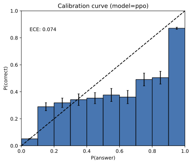

Adam Tauman Kalai[∗] [†] Ofir Nachum Santosh S. Vempala Edwin Zhang
OpenAI OpenAI Georgia Tech OpenAI
2025年9月4日
就像学生面对难考题时一样，大型语言模型在不确定时有时会猜测，产生看似合理但错误的陈述，而不是承认不确定性。这种”幻觉”即使在最先进的系统中也持续存在，并削弱了信任。我们认为语言模型产生幻觉是因为训练和评估程序奖励猜测而非承认不确定性，我们分析了现代训练流水线中幻觉的统计原因。幻觉不必是神秘的——它们简单地起源于二元分类中的错误。如果错误陈述无法与事实区分开来，那么预训练语言模型中的幻觉将通过自然的统计压力产生。我们接着论证幻觉的持续存在是由于大多数评估的评分方式——语言模型被优化为优秀的应试者，在不确定时猜测能提高测试性能。这种惩罚不确定回答的”流行病”只能通过社会技术缓解来解决：修改主导排行榜但不一致的现有基准测试的评分，而不是引入额外的幻觉评估。这种改变可能会引导该领域朝向更可信的AI系统。
众所周知，语言模型会产生过度自信的、看似合理的虚假信息，这降低了它们的实用性。这种错误模式被称为”幻觉”，尽管它与人类的感知体验根本不同。尽管取得了重大进展，幻觉仍然困扰着这个领域，并且在最新模型中仍然存在 (OpenAI, 2025a)。考虑以下提示：
Adam Tauman Kalai的生日是什么？如果你知道，只用DD-MM格式回答。
在三次独立尝试中，一个最先进的开源语言模型[1]输出了三个错误日期：“03-07”、“15-06”和”01-01”，即使只在已知的情况下才要求回答。正确日期是在秋季。表1提供了更详细幻觉的例子。
幻觉是语言模型产生的错误的一个重要特例，我们使用计算学习理论(例如，Kearns and Vazirani, 1994)更广泛地分析这些错误。我们考虑一般的错误集合E，它是合理字符串集合X = E ∪ V的任意子集，其他合理字符串V被称为有效的。然后我们分析这些错误的统计性质，并
[∗] 邮箱：adam@kal.ai
[†] 部分由NSF奖项CCF-2106444和西蒙斯研究员奖项支持。邮箱：vempala@gatech.edu
[1] 该语言模型是DeepSeek-V3（6000亿参数），通过DeepSeek应用程序于2025年5月11日访问。
表1：三个流行语言模型对”Adam Kalai的论文题目是什么？“的回答摘录[3]
ChatGPT (GPT-4o)：Adam Tauman Kalai的博士论文（2002年在CMU完成）题目是：“Boosting, Online Algorithms, and Other Topics in Machine Learning.”
DeepSeek：“Algebraic Methods in Interactive Machine Learning”…在哈佛大学2005年完成。
Llama：“Efficient Algorithms for Learning and Playing Games”…2007年在MIT完成。
没有一个生成了正确的题目或年份 (Kalai, 2001)。
将结果应用于我们感兴趣的错误类型：称为幻觉的合理虚假信息。我们的形式化也包括语言模型必须回应的提示概念。
语言分布最初从训练样本语料库中学习，这不可避免地包含错误和半真半假的内容。然而，我们表明即使训练数据无错误，在语言模型训练期间优化的目标也会导致错误的产生。对于包含错误阴影的真实训练数据，我们可以期望更高的错误率。因此，我们的错误下界适用于更现实的设置，如传统计算学习理论 (Kearns and Vazirani, 1994)。
我们的错误分析是通用的，但对幻觉有特定含义。它广泛适用，包括推理和搜索检索语言模型，分析不依赖于下一词预测或基于Transformer的神经网络的属性。它只考虑现代训练范式的两个阶段：预训练和后训练，如下所述。对于幻觉，分类学 (Maynez et al., 2020; Ji et al., 2023) 通常进一步区分与用户提示矛盾的内在幻觉，例如：
DEEPSEEK中有多少个D？如果你知道，只说数字，不要评论。
DeepSeek-V3在十次独立试验中返回”2”或”3”；Meta AI和Claude 3.7 Sonnet[2]表现类似，包括”6”和”7”这样的大答案。我们的理论也揭示了与训练数据或外部现实矛盾的外在幻觉。
在预训练期间，基础模型学习大型文本语料库中语言的分布。我们表明，即使使用无错误的训练数据，预训练期间最小化的统计目标也会导致语言模型产生错误。证明这一点并非易事，因为一些模型不会犯错，比如总是输出”我不知道”(IDK)的模型或简单地记忆和重现无错误语料库的模型。我们的分析解释了预训练后应该期待什么类型的错误。
为此，我们建立了与二元分类的联系。考虑”这是否
有效的语言模型输出？“生成有效输出在某种意义上比回答这些是/否问题更难，因为生成隐含地需要对每个候选回应回答”这是有效的吗”。形式上，我们考虑是否有效(Is-It-Valid, IIV)二分类问题，该问题有一个训练集，包含大量回应，每个回应都被标记为有效(+)或错误
[2] [https://meta.ai] [和] [https://claude.ai][， 访问于2025年5月9日。]
[3][这些模型于2025年5月9日通过] [chatgpt.com][免费访问， DeepSeek应用(R1, [DeepSeek-AI et al., 2025),]]
[和] [huggingface.co] [(Llama-4-Scout-17B-16E-Instruct)，分别。没有模型搜索网络。]
有效示例 + – + – – – + + 错误示例 – – + – + – + – 拼写 – + – + + 问候。Greatings。 – – – + —- – – + ++ (好模型) 我能帮什么忙？How kan eye help？ – – ++ + – – + – – – + + – – + – – + + – + 计数 LADDER中有2个D。SPELL中有3个L。 + + – – – – – + – – + – + ++ —- – – – – (差模型) PIANO中有1个N。CAT中有1个G。 – –
Mia Holdner的生日是4/1。 – – – + + – – + – + + + Colin Merivale的生日是8/29。 – + 生日 + – – + ++ + – – + 我不知道Zdan的生日。Jago Pere的生日是8/21。 – + – – (没有规律)
图1：是否有效(Is-It-Valid)需要学习使用标记±示例(左)识别有效生成。分类器(虚线)可能在某些概念如拼写(顶部)上准确，但错误往往由于模型较差(中间)或当数据中没有规律时的任意事实(底部)而出现。
(−)，如图1所示。对于这个监督学习问题，训练和测试数据都是标记为+(即预训练数据，因为我们假设它是有效的)的有效示例和标记为−的来自E的均匀随机错误的50/50混合。然后我们展示如何将任何语言模型用作IIV分类器。这反过来允许我们在生成错误(如幻觉)和IIV误分类率之间建立数学关系：
(生成错误率) ≳ 2 · (IIV误分类率)
语言模型避免了许多类型的错误，如拼写错误，并非所有错误都是
幻觉。从IIV误分类到生成的简化阐明了生成错误的统计性质。分析显示预训练如何直接导致错误。此外，它表明导致二分类错误的相同统计因素也会导致语言模型错误。数十年的研究揭示了误分类错误的多面性质[(Domingos, 2012)。]图1(右)直观地说明了这些因素：顶部，可分数据分类准确；中间，圆形区域线性分离器的差模型；
底部，没有简洁的规律。第3.3节分析了几个因素，包括以下具有认识不确定性的程式化设置，当数据中没有规律时。
这种简化将涵盖不同类型事实的早期工作联系起来。例如，
[Kalai和Vempala (2024)]考虑了任意事实的特殊情况，其中数据中没有可学习的规律，如前面的生日幻觉示例。我们展示了IIV简化如何涵盖这种情况，并恢复了他们的界限，即预训练后的幻觉率应至少是训练事实中出现一次的分数。例如，如果20%的生日事实在预训练数据中恰好出现一次，那么人们期望基础模型在至少20%的生日事实上产生幻觉。事实上，我们的分析加强了他们的结果，包括提示和IDK回应，这两者都是幻觉的重要组成部分。
第二阶段，后训练，精炼基础模型，通常以减少幻觉为目标。虽然预训练的分析更一般地涵盖了错误，但我们对后训练的分析侧重于为什么生成过度自信的幻觉而不是省略信息或表达不确定性如IDK。我们为后训练后幻觉的持续存在提供了社会技术解释，并讨论了该领域如何能够抑制它们。
作为类比，考虑以下人类也偶尔编造听起来合理信息的情况。当不确定时，学生可能会在选择题考试中猜测，甚至在笔试中虚张声势，提交他们几乎没有信心的合理答案。语言模型通过类似的测试进行评估。在这两种设置中，当不确定时猜测在二进制0-1方案下最大化期望分数，该方案为正确答案奖励1分，空白或IDK不得分。虚张声势往往过度自信且具体，如对日期问题回答”9月30日”而不是”秋季某个时候”。许多语言模型基准测试反映了标准化人类考试，使用准确率或通过率等二进制指标。因此，为这些基准优化模型可能会促进幻觉。人类在学校之外，在现实生活的磨练中学会了表达不确定性的价值。另一方面，语言模型主要使用惩罚不确定性的考试进行评估。因此，它们总是处于”应试”模式。简单地说，大多数评估都不一致。
我们不是第一个意识到二进制评分不衡量幻觉的人。然而，
关于幻觉评估的先前工作通常寻求难以捉摸的”完美幻觉”
eval.” 在第[4]节中，我们论证这是不够的。我们观察到现有的主要评估方法压倒性地惩罚不确定性，因此根本问题是大量评估方法不一致。假设模型A是一个一致的模型，正确地表示不确定性且从不产生幻觉。让模型B类似于模型A，除了它从不表示不确定性，在不确定时总是”猜测”。在0-1评分下，模型B将优于A，这是大多数当前基准测试的基础。这创造了一个惩罚不确定性和弃权的”流行病”，我们认为少量的幻觉评估是不够的。必须调整众多主要评估方法，以停止在不确定时惩罚弃权。
贡献。 我们识别了幻觉的主要统计驱动因素，从它们的预训练起源到训练后的持续性。监督学习和无监督学习之间的新颖联系揭示了它们的起源，即使训练数据包含IDK。尽管在这个问题上做了大量工作，幻觉的持续性可以通过认识到类似幻觉的猜测被大多数主要评估奖励来解释。我们讨论了对现有评估的统计严格修改，为有效缓解铺平了道路。
据我们所知，本工作中提出的从监督学习（二分类）到无监督学习（密度估计或自监督学习）的归约是新颖的。然而，学习问题之间的归约通用方法是一种成熟的技术，用于证明一个问题至少与另一个问题一样困难（见，例如，[Beygelzimer et al., 2016]）。
许多调查和研究已经探索了语言模型中幻觉的根本原因。[Sun et al. (2025)]引用了诸如模型过度自信[Yin et al. (2023)]、解码随机性[Lee et al. (2022)]、雪球效应[Zhang et al. (2023)]、长尾训练样本[Sun et al. (2023)]、误导性对齐训练[Wei et al. (2023)]、虚假相关性[Li et al. (2022)]、曝光偏差[Bengio et al. (2015)]、逆转诅咒[Berglund et al. (2024)]和上下文劫持[Jeong (2024)]等因素。在更广泛的机器学习和统计设置中，类似的错误来源已经被长期研究[(Russell and Norvig, 2020)]。
最密切相关的理论工作是[Kalai and Vempala (2024)]，我们证明这是我们归约的特例。他们将Good-Turing遗失质量估计[(Good, 1953)]与幻觉联系起来，这启发了定理3。然而，那项工作没有涉及不确定性表达（例如，IDK）、与监督学习的联系、训练后修改，并且他们的模型不包括提示。[Hanneke et al. (2018)]分析了一个交互式学习算法，该算法查询有效性预言机（例如，人类）来不可知地训练一个最小化幻觉的语言模型。他们的方法在统计上是高效的，需要合理数量的数据，但在计算上不高效。其他最近的理论研究[(Kalavasis et al., 2025; Kleinberg and Mullainathan, 2024)]形式化了一致性（避免无效输出）和广度（生成多样化、语言丰富的内容）之间的固有权衡。这些工作证明，对于广泛的语言类别，任何泛化到其训练数据之外的模型要么会产生无效输出的幻觉，要么会遭受模式坍塌，无法产生完整范围的有效响应。
几种训练后技术——如来自人类反馈的强化学习(RLHF)[(Ouyang et al., 2022)]、来自AI反馈的强化学习(RLAIF)[(Bai et al., 2022)]和直接偏好优化(DPO)[(Rafailov et al., 2023)]——已被证明可以减少幻觉，包括阴谋论和常见误解。[Gekhman et al. (2024)]表明，对新信息进行简单微调最初可以降低幻觉率，但后来会增加。此外，已经证明自然语言查询和内部模型激活都编码了关于事实准确性和模型不确定性的预测信号（例如，[Kadavath et al., 2022]）。正如我们在介绍中讨论的，模型对语义相关查询的答案中的不一致性也可以被利用来检测或缓解幻觉[(Manakul et al., 2023; Xue et al., 2025; Agrawal et al., 2024)]。
许多其他方法已被证明在缓解幻觉方面有效；例如，参见[Ji et al. (2023)]和[Tian et al. (2024)]的调查。在评估方面，最近引入了几个综合基准和排行榜（例如，[Bang et al., 2025; Hong et al., 2024]）。然而，相对很少的工作检查了它们采用的障碍。例如，2025年AI指数报告[(Maslej et al., 2025)]指出，幻觉基准”在AI社区内很难获得关注”。
除了确定性的二元表达之外，还提出了更细致的语言构造来传达不确定性的层次[(Mielke et al., 2022; Lin et al., 2022a; Damani et al., 2025)]。此外，语用学领域——研究意义如何受上下文影响——对于理解和改进语言模型传达信息的方式具有越来越重要的意义[(Ma et al., 2025)]。
预训练产生一个基础语言模型ˆp，它近似从其训练分布p中抽取的文本分布。这是无监督学习中的经典”密度估计”问题，其中密度简单地是数据上的概率分布。在语言模型的情况下，分布是在文本上，如果包含多模态输入的话。
证明基础模型会出错的关键挑战在于许多语言模型实际上并不出错。
总是输出IDK的退化模型也避免了错误（假设IDK不是错误）。类似地，假设训练数据无错误，从随机训练样本中复述文本的平凡基础模型也不会出错。然而，这两个语言模型在密度估计方面失败了，而密度估计是统计语言建模的基本目标，如下所述。最优基础模型 ˆ p = p 匹配训练分布，也避免了错误，但这种模型需要
巨大的训练数据，代价过高。尽管如此，我们表明训练良好的基础模型仍应产生某些类型的错误。
我们的分析表明，生成有效输出（即避免错误）比分类
输出有效性更困难。这种简化使我们能够应用计算学习理论的视角，其中错误是预期和可理解的，到生成模型中的错误机制。语言模型最初定义为文本上的概率分布，后来引入提示
（第3.2节）；两种设置共享相同的直觉。不带提示的例子包括生日
陈述，如图1所示，而提示模型可能会被查询特定个人的生日。
不仅仅是自动补全。 我们的分析适用于一般密度估计，而不仅仅是
“下一词预测器”，尽管许多语言模型使用自监督学习
训练，根据前面的词预测每个词。人们很容易将幻觉归因于选择不当的前缀（例如，“Adam Kalai出生于”），语言模型无法为其提供有效补全。然而，从纯统计角度来看，忽略计算，
语言模型的自动补全[视角[4]]并不比任何人类说话者一次说一个词这一事实更重要。我们的分析表明，错误源于模型被拟合到底层语言分布这一事实本身，尽管特定架构可能引入额外错误。
[3.1] [无提示的简化]
无提示情况下，基础模型 ˆ p 是集合 X 上的概率分布。如前所述，
每个例子 x ∈ X 表示一个”合理的”字符串，例如，一个文档[t.][[5]] 例子 X = E ∪ V 被分为错误 E 和有效例子 V，对于非空不相交集 E, V 。基础模型 ˆ p 的错误率表示为，
err := ˆ p(E) = Pr [x ∈ E ]. [(1) [x] [∼] [p] [ˆ]]
训练数据假设来自无噪声训练分布 p(X )，即 p(E) = 0。如所讨论的，对于有噪声训练数据和部分正确陈述，人们可能期望甚至比我们的下界更高的错误率。
我们现在形式化引言中介绍的IIV二元分类问题。IIV
由目标函数 f : X → {−, +} 指定要学习（V中的成员资格）和例子 X 上的分布 D（来自 p 的样本和均匀随机错误的50/50混合）：
D(x) := 和 f (x) := |E| [(] [(] p ( x ) / 2 如果 x ∈ V ,+ 如果 x ∈ V ,
1/2 如果 x ∈ E, − 如果 x ∈ E.
我们的分析根据IIV的上述误分类率下界错误率 err = ˆ p(E)：
[iiv] err:
ˆ [(]+ 如果 ˆ (
err[iiv] := Pr f(x) ̸= f (x) , 其中 ˆ f (x) := (2) [x] [h] [i] p x ) > 1/|E|,
[∼][D] − 如果 ˆ p (x) ≤ 1/|E|.
[4] [数学上，任何分布] [p] [诱导补全分布] [p][(][w][i] [i][+1] [1] [2] [i][−] [w] [. . .] [|] [w] [w] [. . . w] [) 对于每个] [1]
[词前缀] [w][1] [. . . w][i][−][1] [在其支持中。]
[5][为简单起见，我们假设] [X] [是有限的。参见第5节对错误和合理性的进一步讨论。]
因此，在我们的简化中，基础模型用作IIV分类器，通过在特定阈值 1/|E| 处阈值化基础模型的概率。注意这样的概率 ˆ p (x) 通常可以为基础模型高效计算（尽管对于下界有意义而言，高效计算不是必需的）。
推论1。 对于任何训练分布p使得p(V ) = 1 和任何基础模型p ˆ,
err |V| ≥ 2 · err [iiv] δ, − −
|E|
对于 , err err 来自方程 和 | [iiv] [(1)] [(2)] , 和δ :=p ˆ(A) − p(A)| 对于 A := {x ∈ X | p ˆ(x) > 1/|E|}.
由于这种关系对任何基础模型 ˆ p 都成立，它立即意味着所有基础模型
在内在不可学习的IIV事实（例如训练数据中缺失的生日）上会出错，其中 err[iiv] 必然很大，且 δ 和 |V|/|E| 很小（例如，对于每个人，E中错误的生日声明比V中正确的多364倍，加上IDK）。上述推论
立即作为定理[1]的特殊情况得出，定理[1]覆盖了带提示的更一般情况。定理[2]后来使用这个一般结果为直观特殊
情况提供下界。定理[3]和[4]处理小|E|，例如，对于真/假问题|E| = 1。上述界中的常数2相对紧：对于大|E|和小δ，不可学习
概念的err[iiv]可能接近1/2，而err ≤ 1。推论[1]还意味着err[iiv] ≲ 1/2。
幻觉错误。 为了将错误分析应用于幻觉，人们可以考虑E为包含（一个或多个）合理虚假信息的合理生成集。注意幻觉的常见替代定义是不基于训练数据（或提示）的生成。幸运的是，上述下界也适用于这个概念，因为我们假设只有有效训练数据，即生成的事实错误不能基于事实正确的训练数据。
校准（Calibration）。 我们现在论证为什么|δ|是一个衡量（错）校准的指标，在预训练后该指标很小。注意不需要任何语言知识，人们可以通过简单地采用均匀分布 ˆp(x) = 1/|X|来实现δ* = 0，因此δ = 0不需要p = ˆp。审计员可以通过比较满足 ˆp(x) > 1/|E|与 ˆp(ˆx) >* 1/|E|的响应比例来轻松估计δ*，使用
训练样本集x ∼ p和合成生成 ˆx ∼ p ˆ。受[Dawid (1982)]启发，人们可以类比天气预报员每天预测下雨概率。最小校准要求是他们的平均预测是否与下雨的平均比例相符。人们也可以要求在预报> t（对于某个阈值t ∈ [0, 1]）的日子里，这两者相符。[Dawid (1982)]引入了更严格的要求：对于每个t ∈ [0, 1]，在预测为t的日子中，下雨的比例大约为t。
这里有一个特别简单的论证，说明为什么对于标准预训练交叉熵目标，δ通常很小，
L(ˆp) = E [−log ˆp(x)]。 (3) x∼p
考虑将正标记样例的概率重新按因子s > 0缩放并归一化：
p ˆs :∝ {s · p ˆ(x) if ˆp(x) > 1/|E|, p* ˆ(x) if ˆp(x) ≤ 1/*|E|.
图2：GPT-4校准直方图，强化学习前（左）和后（右）

[(OpenAI, 2023a,]图8，经许可转载）。这些图表适用于多项选择查询，其中可能的答案只是A、B、C或D。预训练模型校准良好。
然后，简单计算表明δ是损失关于缩放因子s的导数的大小，在s = 1处计算：
δ = |dL(ˆp[s])/ds|[s=1]
如果δ ≠ 0，那么通过某个s ≠ 1进行重新缩放将降低损失，所以损失不在局部最小值。对于任何足够强大能够近似这种简单重新缩放的语言模型类，局部优化应该产生小的δ。注意δ在单个阈值t = 1/|E|处定义，比诸如期望校准误差（ECE）等概念（在阈值t*上积分）要弱。
幻觉（Hallucinations）只对基础模型不可避免。 许多人论证过幻觉是不可避免的。然而，可以很容易地创建一个不产生幻觉的模型，使用问答数据库和计算器，它回答固定的问题集合，如”金的化学符号是什么？“和良好形式的数学计算如”3 + 8”，否则输出IDK。此外，推论1的错误下界表明，不犯错的语言模型必须不校准，即δ必须很大。正如我们的推导所显示的，校准——因此错误——是标准交叉熵目标的自然结果。实际上，实证研究（图2）显示基础模型通常被发现是校准的，与可能偏离交叉熵而偏向强化学习的后训练模型形成对比。
从此，我们将第3.1节的设置推广到包括从提示分布µ抽取的提示（上下文）c ∈ C。每个示例x = (c, r)现在由提示c和可能响应r组成。上面的分析对应于µ对空提示分配概率1的特殊情况。对于给定提示c ∈ C，设V[c] := {r | (c, r) ∈ V}为有效响应，E[c] := {r | (c, r) ∈ E}为错误响应。训练分布和基础模型现在是条件响应分布p(r | c)，ˆp(r | c)。为了记号方便，我们将这些扩展到X上的联合分布，通过p(c, r) := µ(c)p(r | c)和ˆp(c, r) := µ(c)ˆp(r | c)，使得仍然err := ˆp(E) = P[µ(c)p ˆ(r | c)]和p(E) = 0。 (c,r)∈E
因此，训练分布示例对应于有效的”对话”，如蒸馏的情况[(Chiang et al., 2023; Anand et al., 2023)]。虽然假设训练数据包含从相同提示分布抽取的模型对话是不现实的，但当假设失效时，甚至可能期望更高的错误率。带提示的IIV问题具有相同的目标函数f(x) := +当且仅当x ∈ V，但泛化分布D以相等概率选择x ∼ p或x = (c, r)，其中c ∼ µ且r ∈ E[c]均匀随机。最后，分类器ˆf(c, r)现在当且仅当ˆp(r | c) > 1/min[c]|E[c]|时为+。因此推论1显然是以下的特例：
定理1。 对于任何训练分布p使得p(V) = 1和任何基础模型p ˆ，
err ≥ 2 · err[iiv] − max[c]|V[c]|/min[c]|E[c]| − δ,
其中δ := |p ˆ(A) − p(A)|对于A := {(c, r) ∈ X | p ˆ(r | c) > 1/min[c]|E[c]|}.
泛化重新缩放ˆps（每个提示归一化，仍使用单个参数s）再次证明小的δ = |dL(ˆp[s])/ds|[s=1]，现在对于L(ˆp) := P[µ(c)]P[log ˆp(r | c)]。 (c,r)∈X
数十年的研究已经阐明了导致误分类（二元分类中的错误）的统计因子。我们可以利用这种先验理解来枚举幻觉和其他生成错误背后的因子，包括：统计复杂性，如生日问题（第
tion [3.3.1);] poor models（模型较差），如字母计数（第 [3.3.2) 节）；以及额外因素如垃圾进垃圾出(GIGO)，如阴谋论（第 [3.4) 节）。
当没有简洁的模式可以解释目标函数时，就存在认识论上的不确定性，意味着训练数据中缺少必要的知识。Vapnik-Chervonenkis 维度 [(Vapnik and Chervonenkis, 1971)] VC(F) 刻画了学习函数族 F 中的函数 f : X → {−, +} 时所需的最坏情况下的样本数，且具有高概率保证。具有高 VC(F) 维度的函数族可能需要过多的样本才能学会。我们考虑高 VC 维度的一个自然特例：随机任意事实。特别是，本节考虑在不同提示间随机且独立的有效响应（除了 IDK 之外）。
定义 1。以下是固定的：任意提示分布 µ（任意事实）(c），一个 IDK 响应，以及对于每个提示 c：一个响应集合 R[c] 和回答概率 α[c] ∈ [0, 1]。对于每个 c 独立地，从 R[c] 中均匀随机选择一个正确答案 a[c]。最后，p(a* | c) = α[c] 且对于每个 c，p(IDK | c) = 1 − α[c]，其中 c ∈ C。因此 E[c] = R[c] ∖ {IDK} 且 V[c] = {a[c], IDK}。
假设任何给定事实只有一种书写方式，这可以像首席生日示例那样完成，其中格式已被指定。然而，我们再次注意到，如果每个事实有多种表述方式，人们可能期望更多的幻觉。在固定格式生日的情况下，|E[c]| = 364，而经常被讨论生日的知名人士会有较高的 µ(c)。像爱因斯坦生日这样的著名生日会多次出现，而其他的可能只出现一次，例如在讣告中。大型语言模型很少在经常被引用的事实上出错，例如爱因斯坦的生日或论文标题。
我们对幻觉的下界基于在训练数据中仅出现一次的提示比例，忽略 IDK。
定义 2。提示 c（单例率）∈ C 是 单例 如果它在 N 个训练数据中恰好出现一次，不包含弃权，即 |{i : c[(i)] = c ∧ r[(i)] ≠ IDK}| = 1。设 S ⊆ C 表示单例集合，
sr = |S|/N
表示训练单例的比例。
单例率基于 Alan Turing 的优雅”缺失质量”估计器 [(Good, 1953)]，它衡量从分布中采样时仍然分配给尚未出现结果的概率有多少。具体来说，Turing 对未见事件概率的估计是恰好出现一次的样本比例。直觉上，单例作为在进一步采样中可能遇到多少新结果的代理，因此它们的经验份额成为整个”缺失”分布部分的估计。我们现在陈述任意事实的界限。
定理 2。在任意事实模型中，任何接受 N 个（任意事实）训练样本并输出 p̂ 的算法满足，以 ≥ 99% 的概率在 ⃗a = ⟨a[c]⟩[c∈C] 和 N 个训练示例上：
err ≥ sr/2 − √(35 + 6 ln min[c] |E[c]|)/N − δ.
此外，存在一个有效算法输出校准的 p̂（δ = 0），以 ≥ 99% 的概率，
err ≤ sr + √(13 max[c] |E[c]| + 1)/N.
本文的早期版本提出了一个省略提示和弃权的相关定理 [(Kalai and Vempala, 2024)]。证明在附录 [B] 中。[Miao and Kearns (2025)] 的后续工作提供了对幻觉、单例率和校准的实证研究。
错误分类也可能因为底层模型较差而产生：(a) 模型族无法很好地表示概念，如线性分离器近似圆形区域，或者 (b) 模型族足够有表达力，但模型本身不是很好的拟合。不可知学习(Agnostic Learning) [(Kearns et al., 1994)] 通过定义给定分类器族 G 中任何分类器 g : X → {−, +} 的最小错误率来解决 (a)：
opt(G) := min[g∈G] Pr[x∼D] [g(x) ≠ f (x)] ∈ [0, 1].*
如果 opt(G) 很大，那么 G 中的任何分类器都会有高错误分类率。在我们的情况下，给定由 θ ∈ Θ 参数化的语言模型 p̂[θ]，考虑阈值化语言模型分类器族：
G := {g[θ,t] : θ ∈ Θ, t ∈ [0, 1]}，其中 gθ,t := {+ 如果 p̂θ > t，− 如果 p̂θ ≤ t。
从定理 [1] 立即可得
err ≥ 2 · opt(G) − √(max[c] |V[c]|)/min[c] |E[c]| − δ.
当每个上下文恰好存在一个正确响应时（即标准多项选择，不包含 IDK），可以移除校准项，即使对于 C = 2 个选择也可以达到界限。
定理 3。假设（纯多项选择）|V[c]| = 1 对所有 c ∈ C 且设 C = min[c] |E[c]| + 1 为选择数。那么，
err ≥ 2(1 − 1/C) · opt(G)
为了说明，考虑经典的三元语法语言模型，其中每个词仅基于前两个词进行预测，即仅有两个词的上下文窗口。三元语法模型在 1980 年代和 1990 年代占主导地位。然而，三元语法模型经常输出不符合语法的句子。考虑以下提示和响应：
c[1] = She lost it and was completely out of .. c[2] = He lost it and was completely out of .. r[1] = her mind. r[2] = his mind.
这里，V[c1] := E[c1] = {r[1]} 和 V[c2] := E[c2] = {r[2]}。
推论 2. 设 µ 在 {c[1], c[2]} 上均匀分布。那么任何三元语法模型必须有至少 1/2 的生成错误率。
这个结论来自定理 [3]，因为 C = 2 且对于三元语法模型 opt(G) = 1/2。定理 [3] 和推论 [2] 的证明在附录 [C] 中。虽然 n-元语法模型可以捕获更大 n 值下的更长范围依赖关系，但数据需求随 n 指数级增长。
现在我们重新审视引言中的字母计数示例。要看出这是一个差模型问题，注意到 DeepSeek-R1 推理模型能够可靠地计数字母，例如，产生一个包含以下内容的 377 步思维链：
让我逐个拼出来：D-E-E-P-S-E-E-K。
第一个字母：D — 那是一个 D。第二个字母：E — 不是 D。第三个字母：E — 不是 D。… 所以，D 的数量是 1。
假设类似的训练数据，这表明 R1 对于该任务是比 DeepSeek-V3 模型更好的模型。推理克服的一个表示挑战是现代语言模型通过 tokens 表示提示，例如 D/EEP/SEE/K，而不是单个字符 [(DeepSeek-AI et al., 2025)。]
错误可能由于多种因素的组合而发生，包括上面讨论的因素和其他几个因素。在这里，我们重点介绍几个。
• 计算硬度。在经典计算机上运行的任何算法，即使是具有超人能力的 AI，也不能违反计算复杂性理论的定律。确实，已经发现 AI 系统在计算困难问题上会出错 [(Xu et al., 2024)。]
附录 [D] 的观察 [2] 说明了定理 [1] 如何应用于形如 “c 的解密是什么？” 的难解查询，IDK 是一个有效答案。
• 分布偏移。二元分类中一个众所周知的挑战是训练和测试数据分布经常出现分歧 [(Quiñonero-Candela et al., 2009; Moreno-Torres et al., 2012)。] 类似地，语言模型中的错误通常源于与训练分布差异很大的分布外 (OOD) 提示。诸如”一磅羽毛和一磅铅哪个更重？“这样的问题在训练数据中可能不太可能出现，并且可能在某些模型中引起错误答案。类似地，分布偏移可能是上述字母计数示例中的一个因素，尽管推理模型正确计数字母的事实表明差模型可能是更大的因素。
• GIGO：垃圾进，垃圾出。大型训练语料库通常包含许多事实错误，这些错误可能被基础模型复制。GIGO 对于分类和预训练的统计相似性是不言自明的，因此我们不提供正式的处理。然而，重要的是要认识到 GIGO 是统计因素之一，因为语言模型已被证明会复制训练数据中的错误 [(Lin et al., 2022b; Levy et al., 2021; Alber et al., 2025)。]
GIGO 也为后训练主题提供了自然的过渡，后训练减少了某些 GIGO 错误，如常见误解和阴谋论 [(Ouyang et al., 2022; OpenAI, 2023a; Costello et al., 2024)。] 下一节解释为什么一些幻觉持续存在—甚至可能被当前的后训练流水线加剧。
后训练应该将模型从一个像自动完成模型那样训练的模型转变为一个不输出自信的虚假信息的模型（除非在适当的时候，例如当被要求产生虚构内容时）。然而，我们声称幻觉的进一步减少是一场艰苦的战斗，因为现有的基准和排行榜加强了某些类型的幻觉。因此，我们讨论如何停止这种强化。这是一个社会技术问题，不仅现有评估需要修改，而且这些变化需要在有影响力的排行榜中被采用。
语言模型的二元评估强加了一个错误的对错二分法，对表达不确定性、省略可疑细节或请求澄清的答案不给予任何分数。这样的指标，包括准确性和通过率，仍然是该领域的主流规范，如下所述。在二元评分下，弃权是严格次优的。IDK 类型的回应受到最大惩罚，而过度自信的”最佳猜测”是最优的。动机结合了两个理想因素：(a) 语言模型输出内容的准确率，和 (b) 回应的全面程度。然而，权衡 (a) 比 (b) 更重要对于减少幻觉很重要。
形式上，对于提示 c 形式的任何给定问题，用 R[c] := {r | (c, r) ∈ X } 表示合理回应（有效或错误）的集合。进一步，假设存在合理弃权回应集 A[c] ⊂ R[c]（例如，IDK）。如果 g[c] : R[c] → {0, 1} 且对所有 r ∈ A[c]，gc = 0，则称评分员 g[c] 是二元的。问题 A[c] 由 (c, R[c], A[c], g[c]) 定义，其中应试者知道 c, R[c], A[c]。我们假设应试者知道评分标准是二元的，但不被告知正确答案，其中 gc = 1。应试者对正确答案的信念可以被视为二元 g[c] 上的后验分布 ρ[c]。对于任何这样的信念，最优回应都不是弃权。
观察 1. 设 c 是一个提示。对于二元评分员上的任何分布 ρ[c]，最优回应不是弃权，即，
A[c] ∩ arg max E[g[c] ∼ ρ[c]] [gc] = ∅. r ∈R[c]
虽然证明是平凡的（见附录 [E]），观察 [1] 表明现有评估
可能需要修改。表 [2] 总结了附录 [F] 中的简短元评估分析，发现绝大多数流行评估都采用二元评分。因此，当主要评估对诚实报告置信度和不确定性进行惩罚时，额外的幻觉(hallucination)评估可能不够充分。这并不会减少现有幻觉评估工作的价值，而是指出即使是理想的幻觉评估和理想的后训练方法，能产生诚实的不确定性报告，仍可能因在现有绝大多数评估中表现较差而被掩盖。
[4.2] [显式置信度目标]
人类测试同样大多是二元的，人们已经认识到它们也会奖励过度自信的虚张声势。当然，考试只是人类学习的一小部分，例如，编造生日很快就会导致尴尬。尽管如此，一些标准化国家考试采用或曾经采用对错误答案的惩罚机制（或等价地对弃权给予部分学分），包括印度的JEE、NEET和GATE考试；美国数学协会的AMC测试；以及早年的美国标准化SAT、AP和GRE测试。重要的是，评分系统在说明中明确规定，考生通常了解超过哪个置信度阈值就应该做出最佳猜测。
同样，我们建议评估在其说明中明确声明置信度目标，在提示（或系统消息）中。例如，可以在每个问题后附加如下声明：
仅在你有> t的置信度时回答，因为错误答案会被惩罚t/(1 − t)分，而正确答案得1分，回答”我不知道”得0分。
t有几个自然值，包括t = 0.5（惩罚1分）、t = 0.75（惩罚2分）和t = 0.9（惩罚9分）。阈值t = 0对应二元评分，可以这样描述，例如：“即使不确定也要做出最佳猜测，就像参加考试一样。”一个简单的计算
表2：本研究分析的评估基准及其对弃权的处理方式总结。“二元评分”表示主要指标是严格的正确/错误准确性；“IDK学分”表示弃权是否可以获得任何学分。
基准 评分方法 二元评分 IDK学分
GPQA 多项选择准确性 是 无
MMLU-Pro 多项选择准确性 是 无
IFEval 程序化指令验证 是[a] 无
Omni-MATH 等价评分[∗] 是 无
WildBench 语言模型评分标准[∗] 否 部分[b]
BBH 多项选择/精确匹配 是 无
MATH (L5分组) 等价评分[∗] 是 无
MuSR 多项选择准确性 是 无
SWE-bench 补丁通过单元测试 是 无
HLE 多项选择/等价评分[∗] 是 无
[∗] [评分使用语言模型进行，因此错误的] [虚张声势] [可能偶尔被评为正确。] [a] [IFEval将多个二元标准子分数汇总为复合分数。] [b] [评分标准（1-10级）表明IDK的得分可能低于带有幻觉的”公平”回应，]
[强化了幻觉。]
显示，当答案的置信度（即正确概率）> t时，提供答案的期望得分才会超过IDK（得分0）。
此类惩罚在幻觉研究中得到了充分研究[(Ji et al., 2023)]。然而，我们建议两个具有统计学意义的微妙变化。首先，我们建议在说明中明确置信度阈值，而之前的工作大多在说明中省略了置信度目标或惩罚的提及。（一个显著例外是[Wu et al. (2025)]的工作，他们引入了带有明确惩罚的”风险告知”提示。）理想的惩罚可能反映可能的现实世界危害，但这不现实，因为它特定于问题、目标应用和用户群体。如果在说明中没有透明规定，语言模型创建者很难就正确阈值达成共识。同样，如果说明中存在未指定的错误惩罚，学生可能会争论评分不公平。相反，在每个问题的说明中明确指定置信度阈值支持客观评分，即使选择的特定阈值有些武断甚至随机。如果阈值是明确的，单个模型可能在所有阈值上都表现最佳。然而，如果阈值未说明，则存在固有的权衡，没有单个模型会在一般情况下表现最佳（除了总是正确的模型）。
其次，我们建议将置信度目标纳入现有主流评估，如流行的SWE-bench [(Jimenez et al., 2024)]，它涉及软件补丁的二元评分，而之前的大多数工作都在定制的幻觉评估中引入了隐式错误惩罚。仅仅添加带有隐式错误惩罚的评估面临前述的准确性-错误权衡。另一方面，将置信度目标纳入已在使用的既定评估中，减少了对适当表达不确定性的惩罚。这可能会放大幻觉特定评估的有效性。
通过明确的置信度目标，有一种行为对所有目标同时都是最优的——在正确性概率大于目标的样本中输出IDK。让我们将此称为行为校准——而不是要求模型输出
概率置信度 [(Lin et al., 2022a)]，它必须形成最有用的响应，其中它至少有 t 的置信度。行为校准(Behavioral calibration)可以通过比较不同阈值下的准确率和错误率来审核，并绕过了可能存在指数级多种方式来
表达正确响应的问题 [(Farquhar et al., 2024)]。现有模型可能表现出行为校准，也可能不会，但它可能被证明是一个有用的客观评估。
由于幻觉的多面性，该领域很难就如何定义、评估和减少幻觉达成一致。统计框架必须为了简单性而优先考虑某些方面并忽略其他方面。关于本文使用框架的范围和局限性，有几点需要说明。
合理性与胡言乱语。 幻觉是一种合理的谬误，通过只考虑
合理的字符串 X，我们的分析忽略了生成无意义字符串的可能性（这是
最先进的语言模型很少生成的）。然而，定理 1 的陈述和证明在修改的无意义示例 N 的定义下成立，其中分区 X = N ∪ E ∪ V，err := ˆ p(N ∪ E)，D(N) = 0，以及假设 p(V) = 1。
开放式生成。 为简单起见，本文提出的示例都面向单一事实性问题。然而，幻觉经常出现在开放式提示中，比如”写一篇关于…的传记”。这可以通过将包含一个或多个谬误的响应定义为错误来适应我们的框架。然而，在这种情况下，根据错误数量考虑幻觉程度是自然的。
搜索（和推理）不是万能药。 许多研究表明，增强搜索或检索增强生成(RAG)的语言模型如何减少幻觉
[(Lewis et al., 2020; Shuster et al., 2021; Nakano et al., 2021; Zhang and Zhang, 2025)]。然而，
观察 1 适用于任意语言模型，包括那些使用 RAG 的模型。特别是，二元分级系统本身仍然奖励在搜索无法产生置信答案时的猜测。此外，搜索可能无法帮助处理误算，比如字母计数示例中的情况，或其他内在幻觉。
潜在语境。 一些错误无法仅通过提示和响应来判断。例如，假设用户询问关于电话的问题，语言模型提供关于手机的响应，但问题的意图是关于固定电话。这种歧义不符合我们不依赖于提示和响应外部语境的错误定义。扩展模型以允许不属于给语言模型的提示部分但可用于判断错误的”隐藏语境”将是有趣的，这涉及任意不确定性。
虚假的三分法。 我们的形式化没有区分不同程度或
不确定性程度的错误。显然，正确/错误/我不知道类别也是不完整的。尽管统计理想可能是对每个评估进行评分，就像我们希望在下游应用中对语言模型进行评分一样，明确的置信度目标为主流评估提供了实用的、客观的修改，虚假的三分法至少可以提供一个IDK选项，这与虚假的二分法不同。
超越IDK。 有许多表示不确定性的方式，比如模糊表达、省略细节和提出问题。最终，语言模型可能会遵守置信度概念，比如
语言校准(linguistic calibration) [(Mielke et al., 2022; Damani et al., 2025)]。然而，语言的语用现象 [(Austin, 1962; Grice, 1975)] 是细致入微的。例如，虽然有些情况下
语言模型明确陈述概率置信度估计可能是有用的 [(Lin et al., 2022a)]，但这也可能导致不自然的话语，比如”我有1/365的把握认为Kalai的生日是3月7日”。本文关注关于说什么这一顶层决策的统计因素。
本文揭开了现代语言模型中幻觉的神秘面纱，从它们在预训练期间的起源到通过后训练的持续存在。在预训练中，我们表明生成错误与监督学习中的误分类相似，这些并不神秘，是由于交叉熵损失的最小化自然产生的。
许多语言模型的缺陷可以通过单一评估来捕获。例如，过度使用开场白”当然”可以通过单一的“当然”评估 [(Amodei and Fridman, 2024)] 来解决，因为以”当然”开始响应不会显著影响其他评估。相比之下，我们认为大多数主流评估奖励幻觉行为。主流评估的简单修改可以重新调整激励，奖励适当的不确定性表达而不是惩罚它们。这可以消除抑制幻觉的障碍，并为未来关于细致入微的语言模型的工作打开大门，例如，具有更丰富的
语用能力 [(Ma et al., 2025)]。
致谢。 我们要感谢Alex Beutel、Tom Cunningham、Yann Dubois、Parikshit Gopalan、Johannes Heidecke、Zoe Hitzig、Saachi Jain、Manas Joglekar、Sanjay Kairam、Ehud Kalai、Amin Karbasi、Alan Luo、Anay Mehrotra、Eric Mitchell、Cameron Raymond、David G. Robinson、Mandip Shah、Joshua Vendrow、Grigoris Velegkas、Rose Wang、Zhigang Wang、Jason Wolfe和Jason Wei的有益讨论。
Ayush Agrawal, Mirac Suzgun, Lester Mackey, and Adam Kalai. 2024. Do Language Models
Know When They’re Hallucinating References?. In Findings of the Association for Computational
Linguistics: EACL 2024. Association for Computational Linguistics, St. Julian’s, Malta, 912–928.
https://doi.org/10.18653/v1/2024.findings-eacl.62
Daniel Alexander Alber, Zihao Yang, Anton Alyakin, Eunice Yang, Sumedha Rai, Aly A. Valliani,
et al. 2025. 医疗大语言模型(Medical large language models)容易受到数据投毒攻击。Nature
Medicine https://doi.org/10.1038/s41591-024-03445-1 31, 2 (2025), 618–626.
Dario Amodei and Lex Fridman. 2024. Dario Amodei: Anthropic CEO on Claude, AGI & the
Future of AI & Humanity — Lex Fridman Podcast #452 (Transcript) . Lex Fridman Podcast.
https://lexfridman.com/dario-amodei-transcript/
Yuvanesh Anand, Zach Nussbaum, Brandon Duderstadt, Benjamin Schmidt, and Andriy Mulyar.
J. L. Austin. 1962. 言语行为理论(How to Do Things with Words). Oxford University Press, Oxford. 由J. O. Urmson和Marina Sbisà编辑。
Yuntao Bai, Saurav Kadavath, Sandipan Kundu, Amanda Askell, Jackson Kernion, Andy Jones,
Anna Chen, Anna Goldie, Azalia Mirhoseini, Cameron McKinnon, Carol Chen, Catherine Olsson,
Christopher Olah, Danny Hernandez, Dawn Drain, Deep Ganguli, Dustin Li, Eli Tran-Johnson,
Ethan Perez, Jamie Kerr, Jared Mueller, Jeffrey Ladish, Joshua Landau, Kamal Ndousse, Kamile
Lukosuite, Liane Lovitt, Michael Sellitto, Nelson Elhage, Nicholas Schiefer, Noemi Mercado, Nova
DasSarma, Robert Lasenby, Robin Larson, Sam Ringer, Scott Johnston, Shauna Kravec, Sheer El
Showk, Stanislav Fort, Tamera Lanham, Timothy Telleen-Lawton, Tom Conerly, Tom Henighan,
Tristan Hume, Samuel R. Bowman, Zac Hatfield-Dodds, Ben Mann, Dario Amodei, Nicholas
Joseph, Sam McCandlish, Tom Brown, and Jared Kaplan. 2022. 宪法AI(Constitutional AI): 通过AI反馈实现无害性。arXiv:2212.08073 [cs.CL] https://arxiv.org/abs/2212.08073
Yejin Bang, Ziwei Ji, Alan Schelten, Anthony Hartshorn, Tara Fowler, Cheng Zhang, Nicola
Cancedda, and Pascale Fung. 2025. HalluLens: LLM幻觉基准测试(Hallucination Benchmark)。在计算语言学协会第63届年会论文集(第1卷：长论文) https://doi.org/10.18653/v1/2025.acl-long.1176。Association for Computational Linguistics, Vienna, Austria, 24128–24156.
Samy Bengio, Oriol Vinyals, Navdeep Jaitly, and Noam Shazeer. 2015. 循环神经网络序列预测的计划采样(Scheduled sampling)。神经信息处理系统进展 28 (2015)。
Lukas Berglund, Meg Tong, Maximilian Kaufmann, Mikita Balesni, Asa Cooper Stickland, Tomasz
Korbak, and Owain Evans. 2024. 逆转诅咒(The Reversal Curse): 在”A是B”上训练的LLM无法学习”B是A”。在第十二届国际学习表征会议。
Alina Beygelzimer, Hal Daumé III, John Langford, and Paul Mineiro. 2016. 学习真正有效的化简(Learning Reductions)。Proc. IEEE 104, 1 (2016), 136–147. https://doi.org/10.1109/JPROC.2015.2494118
Wei-Lin Chiang, Zhuohan Li, Zi Lin, Ying Sheng, Zhanghao Wu, Hao Zhang, Lianmin Zheng,
Siyuan Zhuang, Yonghao Zhuang, Joseph E. Gonzalez, Ion Stoica, and Eric P. Xing. 2023.
Vicuna: 以90%* ChatGPT质量令GPT-4印象深刻的开源聊天机器人。https://lmsys.org/blog/2023-03-30-vicuna/
Thomas H. Costello, Gordon Pennycook, and David G. Rand. 2024. 通过与AI对话持久地减少阴谋论信念。Science 385, 6714 (Sept. 2024), eadq1814. https://doi.org/10.1126/science.adq1814
Mehul Damani, Isha Puri, Stewart Slocum, Idan Shenfeld, Leshem Choshen, Yoon Kim, and Jacob
Andreas. 2025. 超越二进制奖励(Beyond Binary Rewards): 训练LM推理其不确定性。
https://doi.org/10.48550/arXiv.2507.16806 arXiv:2507.16806 [cs.LG]
A. P. Dawid. 1982. 良好校准的贝叶斯派(The Well-Calibrated Bayesian)。J. Amer. Statist. Assoc. 77, 379 (Sept. 1982),
605–610. https://doi.org/10.1080/01621459.1982.10477856
DeepSeek-AI, Daya Guo, Dejian Yang, Haowei Zhang, Junxiao Song, Ruoyu Zhang, Runxin Xu,
Qihao Zhu, Shirong Ma, Peiyi Wang, Xiao Bi, Xiaokang Zhang, Xingkai Yu, Yu Wu, Z.F. Wu,
Zhibin Gou, Zhihong Shao, Zhuoshu Li, Ziyi Gao, Aixin Liu, Bing Xue, Bingxuan Wang, 和
其他178位作者。2025. DeepSeek-R1: 通过强化学习激励LLM的推理能力。https://doi.org/10.48550/arXiv.2501.12948 arXiv:2501.12948 [cs.CL]
Pedro Domingos. 2012. 关于机器学习的一些有用知识。Commun. ACM
55, 10 (2012), 78–87. https://doi.org/10.1145/2347736.2347755
Lizhou Fan, Wenyue Hua, Lingyao Li, Haoyang Ling, and Yongfeng Zhang. 2024. NPHardEval:
通过复杂性类别对大语言模型推理能力的动态基准测试。
在计算语言学协会第62届年会论文集(ACL 2024) https://doi.org/10.18653/v1/2024.acl-long.225。Association for Computational Linguistics, Bangkok, Thailand, 4092–4114.
Sebastian Farquhar, Jannik Kossen, Lorenz Kuhn, and Yarin Gal. 2024. 使用语义熵(semantic entropy)检测大语言模型中的幻觉。Nature 630 (jun 2024), 625–630. https://doi.org/10.1038/s41586-024-07421-0
Bofei Gao, Feifan Song, Zhe Yang, Zefan Cai, Yibo Miao, Qingxiu Dong, Lei Li, Chenghao Ma,
Liang Chen, Runxin Xu, Zhengyang Tang, Benyou Wang, Daoguang Zan, Shanghaoran Quan,
Ge Zhang, Lei Sha, Yichang Zhang, Xuancheng Ren, Tianyu Liu, and Baobao Chang. 2024a.
Omni-MATH: A Universal Olympiad Level Mathematic Benchmark for Large Language Models.
https://doi.org/10.48550/arXiv.2410.07985 arXiv:2410.07985 [cs.CL]
Leo Gao, Jonathan Tow, Baber Abbasi, Stella Biderman, Sid Black, Anthony DiPofi, Charles Foster,
Laurence Golding, Jeffrey Hsu, Alain Le Noac’h, Haonan Li, Kyle McDonell, Niklas Muennighoff,
Chris Ociepa, Jason Phang, Laria Reynolds, Hailey Schoelkopf, Aviya Skowron, Lintang Sutawika,
Eric Tang, Anish Thite, Ben Wang, Kevin Wang, and Andy Zou. 2024b. 语言模型
评估工具. https://doi.org/10.5281/zenodo.12608602
Zorik Gekhman, Gal Yona, Roee Aharoni, Matan Eyal, Amir Feder, Roi Reichart, and Jonathan
Herzig. 2024. 在新知识上微调大语言模型(LLMs)会鼓励幻觉(Hallucinations)吗？. In 2024年经验自然语言处理方法会议论文集, Yaser
Al-Onaizan, Mohit Bansal, and Yun-Nung Chen (Eds.). 计算语言学协会,
佛罗里达州迈阿密，美国，7765–7784. https://doi.org/10.18653/v1/2024.emnlp-main.444
Oded Goldreich. 2001. 密码学基础：第1卷，基本工具. 剑桥大学
出版社，英国剑桥.
I. J. Good. 1953. 物种的总体频率和总体参数的估计.
生物统计学 [https://doi.org/10.1093/biomet/40.3-4.237 40, 3-4 (1953年12月), 237–264.]
Google DeepMind. 2025. Gemini 2.5 Pro 模型卡. https://storage.googleapis.com/
model-cards/documents/gemini-2.5-pro.pdf. 访问时间：2025年6月27日.
H. P. Grice. 1975. 逻辑与会话. In 语法与语义学，第3卷：言语行为, Peter
Cole and Jerry L. Morgan (Eds.). 学术出版社，纽约，41–58.
Steve Hanneke, Adam Tauman Kalai, Gautam Kamath, and Christos Tzamos. 2018. 在生成模型中积极避免无意义内容. In 第31届学习理论会议论文集 (机器学习研究论文集, 第75卷), Sébastien Bubeck, Vianney Perchet,
and Philippe Rigollet (Eds.). PMLR，瑞典斯德哥尔摩，209–227. https://proceedings.mlr.
Dan Hendrycks, Collin Burns, Saurav Kadavath, Akul Arora, Steven Basart, Eric Tang, Dawn Song,
and Jacob Steinhardt. 2021. 使用MATH数据集测量数学问题求解能力.
arXiv:2103.03874 [cs.LG] https://arxiv.org/abs/2103.03874
Giwon Hong, Aryo Pradipta Gema, Rohit Saxena, Xiaotang Du, Ping Nie, Yu Zhao, Laura Perez-
Beltrachini, Max Ryabinin, Xuanli He, Clémentine Fourrier, and Pasquale Minervini. 2024.
幻觉排行榜 – 测量大语言模型幻觉的开放性努力. arXiv:2404.05904 [cs.CL] https://arxiv.org/abs/2404.05904
Hugging Face. 2024. 开放LLM排行榜v2合集. https://huggingface.co/spaces/
open-llm-leaderboard/blog . 访问时间：2025年6月26日.
Joonhyun Jeong. 2024. 劫持大型多模态模型中的上下文. In ICLR 2024可靠负责基础模型研讨会.
Ziwei Ji, Nayeon Lee, Rita Frieske, Tiezheng Yu, Dan Su, Yan Xu, Etsuko Ishii, Yejin Bang,
Delong Chen, Wenliang Dai, Ho Shu Chan, Andrea Madotto, and Pascale Fung. 2023. 自然语言生成中幻觉现象调查. 计算机调查 55, 12, 文章248 (2023),
248:1–248:38 页. https://doi.org/10.1145/3571730
Carlos E. Jimenez, John Yang, Alexander Wettig, Shunyu Yao, Kexin Pei, Ofir Press, and Karthik R.
Narasimhan. 2024. SWE-bench: 语言模型能解决现实世界的GitHub问题吗？. In
第12届国际学习表征会议论文集 (ICLR) [https: .]
//proceedings.iclr.cc/paper/2024/hash/edac78c3e300629acfe6cbe9ca88fb84
Nicola Jones. 2025. AI幻觉无法停止 — 但这些技术可以限制它们的危害.
自然 [https://doi.org/10.1038/d41586-025-00068-5 637, 8047 (2025年1月), 778–780.]
Saurav Kadavath, Tom Conerly, Amanda Askell, Tom Henighan, Dawn Drain, Ethan Perez, Nicholas
Schiefer, Zac Hatfield-Dodds, Nova Dassarma, Eli Tran-Johnson, Scott Johnston, Sheer El-Showk,
Andy Jones, Nelson Elhage, Tristan Hume, Anna Chen, Yuntao Bai, Sam Bowman, Stanislav
Fort, Deep Ganguli, Danny Hernandez, Josh Jacobson, Jackson Kernion, Shauna Kravec, Liane
Lovitt, Kamal Ndousse, Catherine Olsson, Sam Ringer, Dario Amodei, Tom B. Brown, Jack
Clark, Nicholas Joseph, Benjamin Mann, Sam McCandlish, Chris Olah, and Jared Kaplan.
2022. 语言模型（大多数情况下）知道它们知道什么. ArXiv abs/2207.05221 (2022).
https://arxiv.org/abs/2207.05221
Adam Kalai. 2001. 机器学习中的概率和在线方法. 博士论文. 卡内基
梅隆大学.
Adam Tauman Kalai and Santosh S. Vempala. 2024. 校准语言模型必定产生幻觉.
In 第56届ACM计算理论年会论文集 (加拿大不列颠哥伦比亚省温哥华) (STOC 2024). 计算机协会，美国纽约州纽约市，160–171.
https://doi.org/10.1145/3618260.3649777
Alkis Kalavasis, Anay Mehrotra, and Grigoris Velegkas. 2025. 语言生成的局限性：幻觉与模式崩溃(Mode-Collapse)之间的权衡. In 第57届ACM计算理论年会论文集 (STOC ’25), Michal Koucký and Nikhil Bansal (Eds.).
计算机协会，捷克布拉格，1732–1743. https://doi.org/10.1145/
Michael J. Kearns, Robert E. Schapire, 和 Linda M. Sellie. 1994. 走向高效的不可知学习。
机器学习 [https://doi.org/10.1007/BF00993468 17, 2-3 (1994年11月), 115–141.]
Michael J. Kearns 和 Umesh V. Vazirani. 1994. 计算学习理论导论。
MIT出版社，美国马萨诸塞州剑桥市。
Jon Kleinberg 和 Sendhil Mullainathan. 2024. 极限中的语言生成。载于 神经信息处理系统进展37 (NeurIPS 2024)。Curran Associates出版社，66058–66079。[https://proceedings.neurips.cc/paper_files/paper/2024/hash/]
7988e9b3876ad689e921ce05d711442f-Abstract-Conference.html
Nayeon Lee, Wei Ping, Peng Xu, Mostofa Patwary, Pascale Fung, Mohammad Shoeybi, 和 Bryan Catanzaro. 2022. 用于开放式文本生成的事实性增强语言模型。arXiv:2206.04624 [cs.CL] https://arxiv.org/abs/2206.04624
Lauren Leffer. 2024. AI聊天机器人永远不会停止幻觉。科学美国人。[https:]
//www.scientificamerican.com/article/chatbot-hallucinations-inevitable/
Sharon Levy, Michael Saxon, 和 William Yang Wang. 2021. 调查文本生成中阴谋论的记忆。载于 计算语言学协会发现：ACL-IJCNLP 2021。计算语言学协会，在线，4718–4729。https://doi.org/10.18653/v1/2021.findings-acl.416
Patrick Lewis, Ethan Perez, Aleksandra Piktus, Fabio Petroni, Vladimir Karpukhin, Naman Goyal, Heinrich K¨uttler, Mike Lewis, Wen-tau Yih, Tim Rockt¨aschel, Sebastian Riedel, 和 Douwe Kiela. 2020. 知识密集型NLP任务的检索增强生成。载于 神经信息处理系统进展，H. Larochelle, M. Ranzato, R. Hadsell, M.F. Balcan, 和 H. Lin (编)，第33卷。Curran Associates出版社，9459–9474。https://proceedings.neurips.
cc/paper_files/paper/2020/file/6b493230205f780e1bc26945df7481e5-Paper.pdf
Shaobo Li, Xiaoguang Li, Lifeng Shang, Zhenhua Dong, Chengjie Sun, Bingquan Liu, Zhenzhou Ji, Xin Jiang, 和 Qun Liu. 2022. 预训练语言模型如何捕获事实知识？因果启发的分析。arXiv:2203.16747 [cs.CL] https://arxiv.org/abs/2203.16747
Percy Liang, Rishi Bommasani, Tony Lee, Dimitris Tsipras, Dilara Soylu, Michihiro Yasunaga, Yian Zhang, Deepak Narayanan, Yuhuai Wu, Ananya Kumar, Benjamin Newman, Binhang Yuan, Bobby Yan, Ce Zhang, Christian Cosgrove, Christopher D Manning, Christopher Re, Diana Acosta-Navas, Drew A. Hudson, Eric Zelikman, Esin Durmus, Faisal Ladhak, Frieda Rong, Hongyu Ren, Huaxiu Yao, Jue WANG, Keshav Santhanam, Laurel Orr, Lucia Zheng, Mert Yuksekgonul, Mirac Suzgun, Nathan Kim, Neel Guha, Niladri S. Chatterji, Omar Khattab, Peter Henderson, Qian Huang, Ryan Andrew Chi, Sang Michael Xie, Shibani Santurkar, Surya Ganguli, Tatsunori Hashimoto, Thomas Icard, Tianyi Zhang, Vishrav Chaudhary, William Wang, Xuechen Li, Yifan Mai, Yuhui Zhang, 和 Yuta Koreeda. 2023. 语言模型的整体评估。机器学习研究交易 [https://openreview.net/forum?id=iO4LZibEqW (2023).]
Bill Yuchen Lin, Yuntian Deng, Khyathi Chandu, Abhilasha Ravichander, Valentina Pyatkin, Nouha Dziri, Ronan Le Bras, 和 Yejin Choi. 2025. WildBench：用来自野外真实用户的挑战性任务对LLM进行基准测试。载于 第13届国际学习表示会议论文集 (ICLR) https://openreview.net/forum?id=MKEHCx25xp。
Stephanie Lin, Jacob Hilton, 和 Owain Evans. 2022a. 教导模型用词语表达其不确定性。机器学习研究交易 2022 (2022)。[https://openreview.net/]
Stephanie Lin, Jacob Hilton, 和 Owain Evans. 2022b. TruthfulQA：测量模型如何模仿人类的错误观念。载于 计算语言学协会第60届年会论文集（第1卷：长论文）。计算语言学协会，爱尔兰都柏林，3214–3252。https://doi.org/10.18653/v1/2022.acl-long.229
Bolei Ma, Yuting Li, Wei Zhou, Ziwei Gong, Yang Janet Liu, Katja Jasinskaja, Annemarie Friedrich, Julia Hirschberg, Frauke Kreuter, 和 Barbara Plank. 2025. 大语言模型时代的语用学：数据集、评估、机遇与挑战调查。载于 计算语言学协会第63届年会论文集（第1卷：长论文），Wanxiang Che, Joyce Nabende, Ekaterina Shutova, 和 Mohammad Taher Pilehvar (编)。计算语言学协会，奥地利维也纳，8679–8696。[https:]
//doi.org/10.18653/v1/2025.acl-long.425
Potsawee Manakul, Adian Liusie, 和 Mark Gales. 2023. SelfCheckGPT：生成式大语言模型的零资源黑盒幻觉检测。载于 2023年自然语言处理实证方法会议论文集，Houda Bouamor, Juan Pino, 和 Kalika Bali (编)。计算语言学协会，新加坡，9004–9017。https://doi.org/10.18653/v1/2023.emnlp-main.557
Nestor Maslej, Loredana Fattorini, Raymond Perrault, Yolanda Gil, Vanessa Parli, Njenga Kariuki,
Emily Capstick, Anka Reuel, Erik Brynjolfsson, John Etchemendy, Katrina Ligett, Terah Lyons,
James Manyika, Juan Carlos Niebles, Yoav Shoham, Russell Wald, Tobi Walsh, Armin Hamrah,
Lapo Santarlasci, Julia Betts Lotufo, Alexandra Rome, Andrew Shi, 和 Sukrut Oak. 2025.
人工智能指数报告2025. 年度报告. AI指数指导委员会, 以人为中心的人工智能研究所, 斯坦福大学, 斯坦福, 加利福尼亚州. [https://hai.stanford.edu/]
ai-index/2025-ai-index-report 访问日期: 2025年6月27日.
Joshua Maynez, Shashi Narayan, Bernd Bohnet, 和 Ryan McDonald. 2020. 关于抽象摘要中的忠实性和事实性. 见 第58届计算语言学协会年会(ACL)论文集. 计算语言学协会,
线上, 1906–1919. https://aclanthology.org/2020.acl-main.173
David McAllester 和 Luis Ortiz. 2003. 缺失质量和直方图规则误差的集中不等式. 机器学习研究期刊 4, 十月 (2003), 895–911.
David A. McAllester 和 Robert E. Schapire. 2000. 关于Good–Turing估计器的收敛速率. 见 第十三届计算学习理论年会论文集(COLT 2000) [https://www. . Morgan Kaufmann, 帕洛阿尔托, 加利福尼亚州, 美国, 1–6.]
learningtheory.org/colt2000/papers/McAllesterSchapire.pdf
Colin McDiarmid. 1989. 关于有界差分方法. 见 组合数学调查, 1989: 第十二届英国组合会议特邀论文, J. Siemons (编). 伦敦数学会讲座笔记系列, 第141卷. 剑桥大学出版社, 剑桥,
英国, 148–188. https://doi.org/10.1017/CBO9781107359949.008
Miranda Muqing Miao 和 Michael Kearns. 2025. 幻觉、单一事实和误差校准：一项实证调查. arXiv:2502.08666 [cs.CL] https://arxiv.org/abs/2502.08666
Sabrina J. Mielke, Arthur Szlam, Emily Dinan, 和 Y-Lan Boureau. 2022. 通过语言校准减少对话代理的过度自信. 计算语言学协会交易期刊 [https://doi.org/10.1162/tacl_a_00494 10 (2022), 857–872.]
José G. Moreno-Torres, Troy Raeder, Rocío Alaiz-Rodríguez, Nitesh V. Chawla, 和 Francisco
Herrera. 2012. 分类中数据集偏移的统一观点. 模式识别 45, 1 (2012),
521–530.
Aidar Myrzakhan, Sondos Mahmoud Bsharat, 和 Zhiqiang Shen. 2024. 开放大语言模型排行榜：从多选题到开放式问题的大语言模型评估、基准测试和竞技场. https:
//huggingface.co/spaces/open-llm-leaderboard/open_llm_leaderboard [arXiv预印本 .]
arXiv:2406.07545 (2024).
Reiichiro Nakano, Jacob Hilton, Suchir Balaji, Jeff Wu, Long Ouyang, Christina Kim, Christopher
Hesse, Shantanu Jain, Vineet Kosaraju, William Saunders, Xu Jiang, Karl Cobbe, Tyna Eloundou,
Gretchen Krueger, Kevin Button, Matthew Knight, Benjamin Chess, 和 John Schulman. 2021.
WebGPT: 基于浏览器辅助的人类反馈问答系统. CoRR abs/2112.09332
(2021). https://arxiv.org/abs/2112.09332
OpenAI. 2023a. GPT-4技术报告. http://arxiv.org/abs/2303.08774 arXiv:2303.08774
[cs].
OpenAI. 2023b. 通过过程监督改进数学推理. https://openai.
com/index/improving-mathematical-reasoning-with-process-supervision/. [研究]
博客文章发布于2023年5月31日. 访问日期: 2025年6月27日.
OpenAI. 2024. 学习使用大语言模型进行推理. https://openai.com/index/
learning-to-reason-with-llms/. [研究博客文章发布于2024年9月12日.]
访问日期: 2025年6月27日.
OpenAI. 2025a. GPT-5系统卡片. 技术报告. https://cdn.openai.com/
gpt-5-system-card.pdf 访问日期: 2025-09-02.
OpenAI. 2025b. 介绍深度研究(Deep Research). https://openai.com/index/
introducing-deep-research/. [博客文章发布于2025年2月2日. 访问日期: 2025年6月27日.]
OpenAI. 2025c. 在API中介绍GPT-4.1. https://openai.com/index/gpt-4-1/. 博客
文章发布于2025年4月14日. 访问日期: 2025年6月27日.
OpenAI. 2025d. OpenAI o3和o4-mini系统卡片. https://openai.com/index/
o3-o4-mini-system-card/. 访问日期: 2025年5月8日.
Long Ouyang, Jeffrey Wu, Xu Jiang, Diogo Almeida, Carroll Wainwright, Pamela Mishkin, Chong
Zhang, Sandhini Agarwal, Katarina Slama, Alex Ray, John Schulman, Jacob Hilton, Fraser
Kelton, Luke Miller, Maddie Simens, Amanda Askell, Peter Welinder, Paul F. Christiano, Jan
Leike, 和 Ryan Lowe. 2022. 训练语言模型通过人类反馈遵循指令. 见 神经信息处理系统进展, 第35卷. 27730–27744. https:
//doi.org/10.5555/3600270.3602281
Alicia Parrish, Angelica Chen, Nikita Nangia, Vishakh Padmakumar, Jason Phang, Jana Thompson,
Phu Mon Htut, and Samuel Bowman. 2022. BBQ: A hand-built bias benchmark for question
answering. In 计算语言学协会发现: ACL 2022, Smaranda
Muresan, Preslav Nakov, and Aline Villavicencio (Eds.). Association for Computational Linguistics,
Dublin, Ireland, 2086–2105. https://doi.org/10.18653/v1/2022.findings-acl.165
Long Phan, Alice Gatti, Ziwen Han, Nathaniel Li, Josephina Hu, Hugh Zhang, Chen Bo Calvin
Zhang, Mohamed Shaaban, John Ling, Sean Shi, Michael Choi, Anish Agrawal, Arnav Chopra,
Adam Khoja, Ryan Kim, Richard Ren, Jason Hausenloy, Oliver Zhang, Mantas Mazeika, Dmitry
Dodonov, Tung Nguyen, Jaeho Lee, and 1000+ others. 2025. 人类的最后考试. https:
//doi.org/10.48550/arXiv.2501.14249 arXiv:2501.14249 [cs.LG]
Joaquin Qui˜nonero-Candela, Masashi Sugiyama, Anton Schwaighofer, and Neil D. Lawrence (Eds.).
2009. 机器学习中的数据集偏移. MIT Press, Cambridge, MA.
Rafael Rafailov, Archit Sharma, Eric Mitchell, Stefano Ermon, Christopher D. Manning, and Chelsea
Finn. 2023. 直接偏好优化: 您的语言模型暗地里是一个奖励模型.
第37届神经信息处理系统国际会议论文集
(NeurIPS) https://dl.acm.org/doi/10.5555/3666122.3668460 (2023).
David Rein, Betty Li Hou, Asa Cooper Stickland, Jackson Petty, Richard Yuanzhe Pang, Julien
Dirani, Julian Michael, and Samuel R. Bowman. 2024. GPQA: 研究生水平的Google防作弊
问答基准. In 第一届语言建模会议论文集 (COLM 2024).
https://openreview.net/forum?id=Ti67584b98
Stuart J. Russell and Peter Norvig. 2020. 人工智能: 现代方法 (第4版).
Pearson, Boston, MA, USA. http://aima.cs.berkeley.edu/
Kurt Shuster, Spencer Poff, Moya Chen, Douwe Kiela, and Jason Weston. 2021. 检索增强减少对话中的幻觉. In 计算语言学协会发现: EMNLP 2021 . Association for Computational Linguistics, Punta Cana, Dominican
Republic, 3784–3803. https://doi.org/10.18653/v1/2021.findings-emnlp.320
Zayne Sprague, Xi Ye, Kaj Bostrom, Swarat Chaudhuri, and Greg Durrett. 2024. MuSR: 测试多步软推理链式思维的极限. In 第十二届国际学习表征会议论文集 (ICLR 2024). OpenReview, Vienna, Austria.
https://openreview.net/forum?id=jenyYQzue1
Aarohi Srivastava, Abhinav Rastogi, Abhishek Rao, Abu Awal Md Shoeb, Abubakar Abid, Adam
Fisch, Adam R. Brown, Adam Santoro, Aditya Gupta, Adri`a Garriga-Alonso, et al. 2023. 超越模仿游戏: 量化和外推语言模型的能力.
https://openreview.net/forum?id=uyTL5Bvosj
Kai Sun, Yifan Ethan Xu, Hanwen Zha, Yue Liu, and Xin Luna Dong. 2023. 从头到尾: 大型语言模型(LLM)有多少知识？又名LLM会替代知识图谱吗？
arXiv:2308.10168 [cs.CL] https://arxiv.org/abs/2308.10168
Yiyou Sun, Yu Gai, Lijie Chen, Abhilasha Ravichander, Yejin Choi, and Dawn Song. 2025. LLM为什么以及如何产生幻觉: 通过子序列关联连接点. [https:]
//doi.org/10.48550/arXiv.2504.12691 arXiv:2504.12691 [cs.CL]
Mirac Suzgun, Nathan Scales, Nathanael Sch¨arli, Sebastian Gehrmann, Yi Tay, Hyung Won Chung,
Aakanksha Chowdhery, Quoc V. Le, Ed H. Chi, Denny Zhou, and Jason Wei. 2023. 挑战BIG-Bench任务以及链式思维是否能解决它们. In 计算语言学协会发现: ACL 2023. Association for Computational Linguistics, Toronto,
Canada, 13003–13051. https://doi.org/10.18653/v1/2023.findings-acl.824
Jianheng Tang, Qifan Zhang, Yuhan Li, Nuo Chen, and Jia Li. 2025. GraphArena: 评估和探索大型语言模型在图计算上的表现. https://openreview.net/forum?
Katherine Tian, Eric Mitchell, Huaxiu Yao, Christopher D. Manning, and Chelsea Finn. 2024.
微调语言模型提高事实性. In 第十二届国际学习表征会议论文集 (ICLR 2024) [https://openreview.net/ . Vienna, Austria.]
Vladimir N Vapnik and A Ya Chervonenkis. 1971. 关于事件相对频率到其概率的一致收敛性. 概率论及其应用 16, 2 (1971), 264–280.
Yubo Wang, Xueguang Ma, Ge Zhang, Yuansheng Ni, Abhranil Chandra, Shiguang Guo,
Weiming Ren, Aaran Arulraj, Xuan He, Ziyan Jiang, Tianle Li, Max Ku, Kai Wang,
Alex Zhuang, Rongqi Fan, Xiang Yue, and Wenhu Chen. 2024. MMLU-Pro: 一个更鲁棒且具有挑战性的多任务语言理解基准. In 神经信息处理系统进展37 (NeurIPS 2024), 数据集和基准
Track [https://papers.nips.cc/paper_files/paper/2024/hash/ . arXiv:2406.01574 [cs.CL]]
ad236edc564f3e3156e1b2feafb99a24-Abstract-Datasets_and_Benchmarks_Track.html
Jerry Wei, Da Huang, Yifeng Lu, Denny Zhou, and Quoc V Le. 2023. 简单的合成数据减少大型语言模型中的谄媚行为(Sycophancy). arXiv:2308.03958 [cs.CL] https://arxiv.org/
Cheng-Kuang Wu, Zhi Rui Tam, Chieh-Yen Lin, Yun-Nung Chen, and Hung yi Lee. 2025.
回答、拒绝还是猜测？探究语言模型中的风险感知决策制定。
arXiv:2503.01332 [cs.CL] https://arxiv.org/abs/2503.01332
Jialiang Xu, Yifan Mai, and Percy Liang. 2025. HELM Capabilities: 通过能力评估语言模型能力
by Capability. https://crfm.stanford.edu/2025/03/20/helm-capabilities.html. Stanford
CRFM Blog.
Ziwei Xu, Sanjay Jain, and Mohan Kankanhalli. 2024. 幻觉是不可避免的：大型语言模型的内在
局限性。arXiv:2401.11817 [cs.CL] https://arxiv.org/abs/2401.
Yihao Xue, Kristjan Greenewald, Youssef Mroueh, and Baharan Mirzasoleiman. 2025. 在不确定时进行验证：超越黑盒幻觉检测中的自一致性。
arXiv:2502.15845 [cs.CL] https://arxiv.org/abs/2502.15845
Zhangyue Yin, Qiushi Sun, Qipeng Guo, Jiawen Wu, Xipeng Qiu, and Xuanjing Huang. 2023. 大型语言模型知道它们不知道什么吗？arXiv:2305.18153 [cs.CL] https:
Muru Zhang, Ofir Press, William Merrill, Alisa Liu, and Noah A Smith. 2023. 语言模型幻觉如何滚雪球般增长。arXiv:2305.13534 [cs.CL] https://arxiv.org/abs/2305.13534
Wan Zhang and Jing Zhang. 2025. 检索增强大型语言模型的幻觉缓解：综述。Mathematics 13, 5 (2025), 856. https://doi.org/10.3390/math13050856
Jeffrey Zhou, Tianjian Lu, Swaroop Mishra, Siddhartha Brahma, Sujoy Basu, Yi Luan, Denny
Zhou, and Le Hou. 2023. 大型语言模型的指令遵循评估。https:
//doi.org/10.48550/arXiv.2311.07911 arXiv:2311.07911 [cs.CL]
我们现在证明主要定理。
定理1的证明。 设 K := min[c][∈C] |E | | [c] 且 k := max |V A [c] [∈C] | [c] 。同时，回顾 δ = p ˆ() − p(A)| 可以等价地写作 δ = |p(B) − p ˆ(B)|，其中 A、B 表示高于和低于阈值的响应：
A := {(c, r) ∈ X | p ˆ(r | c) > 1/K} [(4)]
B := {(c, r) ∈ X | p ˆ(r | c) ≤ 1/K}. [(5)]
将幻觉和误分类率分为高于和低于阈值的率：
err = ˆ p(A \ V) + ˆ p(B \ V)
err B ∩ V [iiv] = D ( A \ V ) + D ( ).
在阈值之上，误分类 D(A \ V ) 是 D(c, r) 的总和，仅对 (c, r) ∈ A 且 r ∈ E[c]—每个贡献 D(c, r) = µ(c)/2|E | ≤ [c] µ(c)/2K 。但每个这样的误分类也对阈值之上的幻觉 ˆ p (A \ V) 贡献 µ(c)ˆ p(r | c) ≥ µ(c)/K。因此，
p ˆ (A \ V) ≥ 2D(A \ V)
因此，只需证明在阈值之下：
p ˆ k ( B \ V ) ≥ 2 D( B ∩ V ) − − δ. [(6)]
K
根据定义，2D(B ∩ V ) = p(B ∩ V ) = p(B)。同时，对于每个 c 有 |V[c]| ≤ k 个有效响应，每个在 B 中的响应具有 ˆ p(r | c) ≤ 1/K，所以 ˆ p (B ∩ V ) ≤ [P] p [c] ˆ(c)k/K = k/K.因此，
2D(B ∩ V ) − p ˆ(B \ V) = p(B) − p ˆ(B \ V)
= p(B) − (ˆ p(B) − p ˆ(B ∩ V ))
≤ δ + ˆ k p( B ∩ V ) ≤ δ + .
K
这等价于方程 [(6),] 如所需。
我们首先回顾 Good-Turing (GT) 缺失质量估计器 [(Good, 1953)] 及其保证 [(McAllester and Ortiz, 2003).]在该设置中，N 个独立同分布样本 [N] s ∼ ν 从集合 S 上的分布 ν 中抽取—弃权不是考虑因素。缺失质量是从 ν 中抽取的新样本不在训练样本 s 中的概率，GT 估计是恰好出现一次的训练样本的比例。我们首先陈述先前的保证，然后将其适配到我们有弃权的设置。[McAllester and Ortiz (2003)] 的一个保证可以表述为：
推论3。 [(McAllester and Ortiz, 2003)] 设 s ∼ ν 为从集合 S 上的分布 ν 中抽取的 N 个独立同分布样本。设 M := Pr ∈ [x] [∼] [ν] [ x / s] 且 GT 为恰好出现一次的样本比例。对于任意 γ ∈ (0, 1]:
[s] Pr [] |M − GT| ≤ + 2.42 [] ≥ 1 − γ. [N] [∼] [ν] N [] [s] [] 1 ln(4 /γ ) N
证明。 设 GT :=[GT] 且 M := E[M ]。推论通过结合 M 和 GT 的集中界得出。首先 [McAllester and Schapire (2000)] 的定理1显示：
GT − M ∈ [0, 1/N ]
然后，定理10和16 [(McAllester and Ortiz, 2003)] 暗示以概率 [[2] ≤ exp( − N ε ),] M 在任一方向偏离 M 超过 ε，通过联合界给出对于 ε [q] [ln(4][/γ][)] := ,
[N]
[] [s] [] ln(4 /γ)
Pr γ γ γ + =
[] [] | M − M | ≥ ≤ . 4 4 2
[s] [N] [∼] [ν] N
遵循 [McAllester and Schapire (2000)] (引理13)，McDiarmid 不等式 [(McDiarmid, 1989)] 直接暗示 GT 的收敛性，因为改变任何一个样本最多可以改变 GT 2/N 。因此，
· [!] γ
[s] [N] [ν] N 4/N 2 [∼] Pr [] |GT − GT| ≥ [] ≤ 2 exp [N] − = . [] [s] [] [2 ln(4][/γ][)] 2 ln(4 /γ) 2
结合这三个显示的方程，通过联合界给出，
[] [s] [] 1 √ ln(4 /γ)
Pr γ γ GT + (1 + 2) + =
[] [] | − M | ≥ ≤ γ. 2 2
[s] [N] [∼] [ν] N N
最后，推论从 1 + √2 ≤ 2.42 得出。
我们现在将此扩展到有弃权响应 IDK(不知道) 的情况，该响应不计入 sr 中。
具体来说，如果训练数据中存在一个训练示例 (c, r)，其中 c^(i) = c 且 r ≠ IDK，那么我们说查询 c^(i) 在训练数据中被回答了，否则称为未回答。设
U := C {c | i ≤ N, r ≠ IDK}
表示未回答查询的集合。当然，通过记忆已回答查询的 a_c，可以实现对已回答查询的完美分类准确率。我们将图灵缺失质量(Missing Mass, MM)估计扩展到弃权情况，如下所示：
MM := Pr[c ∈ U ∧ r ≠ IDK] ~ p(c,r)
我们同样使用推论3来表明 sr 是 MM 的良好估计器：
引理1. 对于所有 N, γ ∈ (0, 1]:
Pr[|MM - sr| ≤ 4.42√(ln(5/γ)/N)] ≥ 1 - γ
证明. 我们的 MM-sr 与标准 GT 之间的唯一区别是我们忽略了弃权。为了适应之前的界限，考虑样本 s’，它是通过将所有 x = (c, IDK) 替换为简单的 x = IDK（对任何 c）而得到的，但其他方面保持 x 不变。这将所有 IDK 响应合并为相同的示例。因此，GT 相比 sr 最多可能多计算一个单例：
GT - sr ∈ [0, 1/N]
上述替换产生一个分布 P_ϕ，其中 ϕ(IDK) = Σ_c μ(c)p(c)(IDK) 是弃权的概率。类似地，我们有 M - MM ∈ {0, ϕ(IDK)}，当 IDK ∈ s’ 时 M - MM = ϕ(IDK)，这以概率 (1 - ϕ(IDK))^N 发生。但如果 ϕ(IDK) ≥ ln(5N/γ)/N，我们也有 (1 - ϕ(IDK))^N ≤ γ/5。因此，无论 ϕ(IDK) 的值如何：
Pr[M - MM ∈ [0, ln(5N/γ)/N]] ≥ 1 - γ/5
结合上述两个显示方程给出：
Pr[(M - GT) - (MM - sr) ≤ ln(5N/γ)/N] ≥ 1 - γ/5 (7)
推论3在 γ/5 处给出：
Pr[|M - GT| ≤ 1/N + 2.42√(ln(5/γ)/N)] ≥ 1 - γ/5
与方程(7)结合，通过联合界和三角不等式：
Pr[|MM - sr| ≤ ln(5N/γ)/N + 1/N + 2.42√(ln(5/γ)/N)] ≥ 1 - γ
最后，引理从以下事实得出：对于 z := √(2ln(5N/γ)/N) ≥ ln(5N/γ)/N + 1/N，只要 z ≤ 1，我们有 z ≤ z（否则引理平凡成立，因为界 > 2）。
引理2. 对于任何 N ≥ 1, γ ∈ (0, 1] 和任何输出 p̂ 的算法:
Pr[2err_iiv ≥ sr - 6√(ln(3N/γ)/N)] ≥ 1 - γ
证明. 由引理1：
Pr[|MM - sr| ≤ 4.42√(ln(10/γ)/N)] ≥ 1 - γ/2
注意 ln(10/γ) ≤ ln(3N/γ) 对 N ≥ 2（对 N = 1 引理平凡成立）。另外，2 + 4.42 ≤ 6。因此，足以证明：
Pr[2err_iiv ≥ MM - 2ln(3N/γ)/N] ≥ 1 - γ/2
设 ζ := ln(3N/γ)/N，每个查询根据 p 以答案（非 IDK）出现的概率为：
μ’(c) := μ(c)α_c
因此一旦选择了 a_c，μ’(c) = p(c, a_c)。另外注意 MM = Σ_{c∈U} μ’(c)。引理将从以下两个不等式得出：
Pr[∀c ∈ U : μ’(c) ≤ ζ] ≥ 1 - γ/3 (8)
Pr[2err_iiv ≥ MM - 2ln(3N/γ)/N | ∀c ∈ U : μ’(c) ≤ ζ] ≥ 1 - γ/6 (9)
条件 μ’(c) ≤ ζ 将使我们能够使用霍夫丁界(Hoeffding bounds)。对于方程(8)，注意有 ≤ N/ζ 个查询 c 满足 μ’(c) ≥ ζ。对于这些查询中的每一个，c ∈ U 的概率最多为 (1 - ζ)^N。因此，通过联合界：
Pr[∃c ∈ U : μ’(c) > ζ] ≤ (N/ζ)(1 - ζ)^N ≤ (N/ζ)e^{-ζN} = N/(ζln(3N/γ)) ≤ γ/3
这等价于方程(8)。现在我们建立方程(9)。
设指示器 I[φ] 表示当谓词 φ 成立时为 1，否则为 0。错误 err_iiv 至少是其在 c ∈ U, r ∈ R_c 上的误差和，根据 D 的定义：
err_iiv ≥ Σ_{c∈U} μ(c)α_c I[f̂(c, r) = +] + (1/2)Σ_{c∈U} Σ_{r∈R_c{a_c}} I[f̂(c, r) = +]/(|R_c| - 1)
≥ (1/2)Σ_{c∈U} μ’(c)I[f̂(c, a_c) = -] + (1/2)Σ_{c∈U} Σ_{r∈R_c{a_c}} μ’(c)I[f̂(c, r) = +]/(|R_c| - 1)
= Σ_{c∈U} μ’(c)γ_c
其中 γ_c := I[f̂(c, a_c) = -]/2 + Σ_{r∈R_c{a_c}} I[f̂(c, r) = +]/(2(|R_c| - 1))
因此 err_iiv ≥ Σ_{c∈U} μ’(c)γ_c，其中 γ_c 如上定义，不难看出 γ_c ∈ [0, 1]。（条件 μ’(c) ≤ ζ 将使我们能够对 Σμ’(c)γ_c 应用霍夫丁界。）因此，与方程(9)等价的是证明：
Pr[2Σ_{c∈U} μ’(c)γ_c ≥ MM - 2ln(3N/γ)/N | ∀c ∈ U : μ’(c) ≤ ζ] ≥ 1 - γ/6 (10)
现在是关键技巧：因为算法的输出与未见过的 c ∈ U 的 a_c 无关，可以等价地想象，对于未见过的 c ∈ U，a_c 只有在训练数据上运行算法选择 p̂（从而确定 f̂）之后才被选择。因此，假设稍后将为 c ∈ U 选择 c_v，但训练数据和因此的 f̂ 已经固定。
然后，我们观察到 E[γ_c] = 1/2，因为每个 r ∈ R_c 对这个期望值贡献 1/(2|R_c|)
无论是否有 ˆ f (c, r) = [′] [′] ± 。这给出 E [ [P] µ ( c ) [P] γ [c] ] = MM / 2，因为 MM = µ c [c] [c] ()。最后，我们可以将 Hoeffding 界应用到 [P] [′] [′] µ µ c [c] ( c ) γ [c]，因为 ()γ[c] 是独立的随机变量，每个都在 [0 [′] , µ(c)] 中。该界依赖于，
[X] [X] ( µ ( c )) ≤ max µ ( c ) µ (c) ≤ max µ (c) ≤ ζ 如果 ∀c ∈ U µ (c) ≤ ζ. [′] [2] [′] [′] [′] [′]
[c][∈U] [c][∈U]
[c] [∈U] [c][∈U]
因此 Hoeffding 界给出，
Pr [X] γ [′] MM [] [s] [] [] µ ζ ln(6/γ) [] [′] ( [] [] [] c ) γ ≤ − ∈ U ( c ≤ ζ ∀ c µ ) ≤ , []
[c] 2 2 6 []
[]
这意味着方程 [(10)]，因为 [p]2ζ ln(6/γ) = [p]2 ln(3N/γ) ln(6/γ) [p] /N ≤ ln(3 N/γ )2/N（使用 ln(6/γ) ≤ ln(3N/γ) 对于 N ≥ 2，而对于 N = 1 该引理显然成立）。
现在我们证明定理 [2.]
定理 [2] 的证明 以下更一般的下界，对于任何 γ ∈ (0, 1]，直接从定理 [1] 得出，其中 max[c] |V[c]| = 2，以及引理 [2.]。具体来说，以 ≥ 1 − γ 的概率：
err sr − − √ − δ. |E ≥ 2 6 ln(3N/γ) min | [c] [c] N
对于 ≥ 99% 的概率在 γ = 0.01 时，我们使用简化式 6 ln(3N/γ) ≤ 35 + 6 ln N。现在设 L := max[c] |E[c]|.
对于上界，我们现在证明存在一个高效算法输出校准的 ˆ p（因此 δ = 0），且以 ≥ 1 − γ 的概率，
err ≤ sr − + 5 . L + 1 sr [s] ln(5/γ ) N
定理中 99% 概率界从 5[p]ln(500) ≤ 13 得出。
校准语言模型学习算法记忆训练数据中看到的 (c, a[c]) 的 a[c]，并在训练数据中看到的那些 c / ∈ U 上与 p 完全一致。对于未见过的 c ∈ U，它以正确的概率 1 − α[c] 弃权，否则在 R[c] 上是均匀随机的：
[]1 − α 如果 r = IDK [] [c] []
[]
[]α ∈ U 如果 c /, r = a []
p [] [c] [c] ˆ ( c, r ) := .
[]α /|R | 如果 c ∈ U, r ∈ R [] [c] [c] [c] []0 否则。 []
[]
[]
很容易看出，对于这个 ˆ p，
err = [X] α[c] [X] L L µ ( c ) ( |R | − ≤ [c] 1) µ ( c ) α [c] = MM . |R [c] | L + 1 L + 1 [c] [∈U] [c] [∈U]
最后，根据引理 [1]
[] [s] [] ln(5 /γ)
Pr [] |MM − sr | ≤ 5 [] ≥ 1 − γ. N
这些意味着，
[] [s] [] L ln(5 /γ )
Pr [] err ≤ sr +5 ≥ 1 − γ., L + 1 [] N
如所需。只需证明对于所有 z ∈ [0, 1]，δ[z] = 0。根据 δ[z] 的定义，
[] []
δ [][z] =[] [][] p r Pr [ˆ ( | c ) > z ] − Pr [ˆ p( r | c) > z] []
[] [][c,r] [)] [∼] [p] [ˆ] [(] [c,r] [)] [p] [(] [∼] []
[] [][] []
= [][X] [X] []µ ( c ) []p ˆ ( r | c ) − p ( r | c )[] []
[] [][c]
[] [][r] [: ˆ] [p] [(] [r] [|] [c] [)] [>z]
根据定义，ˆ p (r | c) = p(r | c) 在所有地方都成立，除了 c ∈ U, r ∈ R[c]。但对于每个 c ∈ U，ˆ p (c, r) 在 r ∈ R[c] 上是常数，所以 ˆ p(c, r) > z 对于 r ∈ R[c] 中的所有 r 要么全部成立要么全部不成立。因此上面的内部求和在任何情况下都是 0，因为 [P] [r][∈R] p [c] ˆ(r | c) − p(r | c) = 0 且 ˆ p(IDK | c) = p(IDK | c)。
[C] [弱模型分析]
对于每个提示只有一个正确答案的情况，如多项选择考试，直观上如果唯一有效的回答是唯一的正确答案，而人们无法可靠地区分正确答案和其他答案，那么必须产生错误。对于这种简单情况，我们证明存在一个阈值 t 具有更好的界。特别地，设
ˆ [(]+ 如果 ˆ p (r | c) > t,
err f [h] [i] ( ˆ ) := Pr ( ) = ( ) 其中 ˆ( ) :=
[iiv] [t] [t] [t] f x ̸ f x , f c, r [x] [∼][D] − 如果 ˆ p(r | c) ≤ t.
因此 ˆ f = ˆ f [t]，其中 t = 1/ min |E | [c] 且 ˆ f 在论文正文中定义。我们现在陈述并证明一个比定理 [3] 更强的定理。定理 [3] 直接从 opt(G) 的定义和以下定理得出。
定理 4. 假设对于所有 c ∈ C 有 |V[c]| = 1，设 C = min[c] |E[c]| + 1 为选择数。那么，对于所有 p, p ˆ，存在某个阈值 t ∈ [0, 1] 使得：
err ≥ 2 1 − erriiv. C[] []1
注意推论 [2] 的证明直接从定理 [4] 得出
推论 [2] 的证明 证明直接从定理 [4] 和事实 erriiv = 1/2 得出，因为基于三元组模型的分类器 ˆ f [t] 无法区分 c[1], c[2]。
现在我们证明定理 [4.]
定理 [4] 的证明 考虑从 [0, 1] 中均匀随机选择 t。我们证明：
err ≥ 2 1 − E [erriiv], (11) C[] []1 [t] [∈][[0][,][1]]
这意味着必须存在某个阈值 t ∈ [0, 1] 使其成立。注意对于均匀随机的 t ∈ [0, 1]，
Pr [h] [i] ˆ f[t] ( c, r) = + = ˆ p(r | c).
[t][∈][[0][,][1]]
首先，期望的假阳性率（ˆ p(r | c) > t 时的误分类）是：
[t] [[0][,][1]][,x][∼][D] |E 2 [t] [c] | [c] [r] [∈] Pr t = + Pr t = +, f (x) = − = µ(c) f ˆ [h] [i] [X] [X] [h] [i] f ˆ 1 1 c, r
[∈E][c]
≤ 1 [X] [X] 1 µ ( c ) p ˆ(r | c) 2 C − 1 [c] [r /] [∈A] [c]
= 1 . err 2( C − 1)
其次，设 A[c] = {a[c]} 对于每个 c。那么期望的假阴性率是，
[t] Pr ft = −, f (x) = + = µ(c) Pr ft = − [∈] [h] [i] [h] [i] [X] ˆ 1 ˆ
[[0][,][1]][,x][∼][D] [t] [c] 2
= 1 [X] µ(c) (1 − p ˆ(a[c] | c)) 2 [c]
= 1 . err 2
因此期望的误分类率，即期望假阳性率和假阴性率的总和，
满足：[]1 1 [][err E [iiv] ( ˆ f [t] )] ≤ + 1 err, [t] 2 C − 1
这等价于重新整理项后的方程 [(11)]。
在本节中，我们提供一个计算难解性第3.4节的典型例子。[Fan et al.] [(2024)] 和 [Tang et al. (2025)] 研究了诱发幻觉的更自然的经验上困难问题的例子。
安全的加密系统具有这样的特性：没有高效的算法能比随机猜测更好地猜出正确答案。一个（对称密钥）加密系统能让两方进行通信，使得窃听者如果不知道共享密钥 S，就无法了解正在传达的内容。形式上，这样的设置有消息集合 M、密文集合 H、加密函数 e[S] : M → H，以及解密函数 d[S] : H → M，使得对于所有 m ∈ M，都有 dS = m。
在幻觉的背景下，让 p 输出 (c, r)，其中 r ∈ M 是均匀随机的，提示 c 的形式为”h 的解密是什么？“，其中 h = eS。不出所料，我们的主要定理意味着语言模型应该产生错误。在安全系统中，不知道 S 就无法区分一对 (m, eS) 和 (m, h)，其中 m ∈ M 是均匀随机消息，h ∈ H 是错误的（或均匀随机的）密文。也就是说，人们无法区分真实通信的分布与错误或随机通信的分布。这个表述与我们的分布 D 相匹配，该分布以概率 1/2 有 x = (e(m), m)，以概率 1/2 有 x = (h ̸= e(m), m)，其中 h ∈ H \ {e(m)} 是均匀随机的。这对应于 µ 的随机提示，以及目标函数 f (h, r) = + 当且仅当 h = e(r)。标准硬度安全定义的一种形式如下（参见，例如，[Goldreich, 2001):]）：
定义 3 。 设 β（安全加密）∈ [0, 1]。分类器 f ˆ : X → {+, −} 如果满足以下条件，则 β-破解加密方案
[x] Pr [ ˆ(x) ̸= f(x)] ≤ . f 1 − β [∼][D] 2
如前所述，随机分布 ˆ p 有 δ = 0，无论 t 如何，因此很容易有弱校准响应。然而，假设不能破解密码系统，没有校准的语言模型能正确回答这样的提示。有了这些定义，定理 [1] 使用 |V[c]| = 2 和 |E[c]| = |M| − 1 立即意味着以下内容：
观察 2。 对于任何 β ∈ [0 ˆ , 1] 和任何语言模型 p ˆ ，如果分类器 f 不 β-破解加密安全性，则 p ˆ 将以至少以下概率输出错误的解密 r，
1 β − − δ. |M| − − 2 1
这个典型例子说明了我们的约简如何应用于计算困难问题，以及监督学习的计算硬度如何平行于计算硬度作为幻觉的因素。
下面是观察 [1] 的简短证明。
观察 [1] 的证明。 g 假设 gc = 0 对于所有 r ∈ A[c]，并且每个二元评分器 g[c] 在某个值 r ∈ R[c] \ A[c] 处假设为 gc = 1。此外，由于假设 X 是有限的，必须存在某个这样的 r，使得 Pr[g][c][∼][ρ][c] [gc = 1] > 0。这从联合界得出：
[X] Pr [g[c] r () = 1] ≥ Pr [∃r g[c] r () = 1] = 1. [g][c] [∼][ρ][c] [g][c][∼][ρ][c] [r][∈R][c]
因此，所有 r ∈ A[c] 在期望分数方面都是严格次优的。
我们现在回顾有影响力的评估，以确定奖励猜测或虚张声势的二元评分的普遍性。尽管最近语言模型评估激增，但语言建模领域关注相对较少的基准。在这里，我们检查流行的排行榜，以了解有影响力的评估如何对响应中的不确定性进行评分。其中两个排行榜根据多个选择标准策划评估以供包含，另外两个创建了自己现在广泛使用的基准。
表 [2]（第 [14] 页）显示了这里选择的十个评估。在其中一个排行榜中只有一个评估，WildBench [(Lin et al., 2025),] 在指示不确定性时给予最小信用。请注意，两个策划的排行榜有 50% 的重叠（前三个评估）。作为对这些评估受到关注的进一步证据，请注意 Google 的最新语言模型卡
（Gemini 2.5 Pro，[Google DeepMind, 2025）] 包含了 GPQA、MMLU、SWE-bench、HLE 和 AIME（类似于 MATH L5）的结果。OpenAI 同样发布了 GPQA [(OpenAI,] [2024),] MMLU 和 SWE-bench verified [(OpenAI, 2025d),] IFEval [(OpenAI, 2025c),] MATH [(OpenAI,] [2023b),] 和 HLE [(OpenAI, 2025b)] 的结果。斯坦福的 2025 AI 指数报告 [(Maslej et al., 2025)] 包含了 MMLU-Pro、GPQA、WildBench、MATH、SWE-bench 和 HLE 的结果。
请注意，这些评估中的许多都使用语言模型来判断输出，例如，确定答案的数学等价性，如 1.5 和 3/2。然而，也发现 LM 判断器错误地判断答案，即使对于数学问题，有时将错误的长响应评为正确 [(Xu et al., 2025).]。评估的这个方面即使在数学等客观领域也可能鼓励幻觉行为。
语言模型整体评估（HELM [Liang et al., 2023)]) 是一个成熟的广泛使用的
已使用的评估框架。他们的”旗舰”能力排行榜[[7]]在其排行榜中位列第一，旨在”体现我们对通用能力评估的最新思考”。它包含五个场景，其中四个明确不给IDK任何分数，一个似乎给IDK的分数低于有事实错误或幻觉的公平回答，因此也鼓励猜测。
具体来说，它包含一组场景，选择如下。
对于每种能力，我们从现有文献的可用场景中选择一个场景，考虑的因素包括：1) 是否已饱和，基于最先进模型的表现，2) 其时效性，由发布日期决定，3) 其质量，基于其清晰度、采用度和可重现性。总共有22个模型在5个面向能力的场景中进行了基准测试。[(Xu et al., 2025)]
该基准包含五个场景。前四个几乎不给IDK任何分数。MMLU-Pro [(Wang et al., 2024)]和GPQA [(Rein et al., 2024)]按标准多选考试评分，没有IDK选项。Omni-MATH [(Gao et al., 2024a)]将数学题的输出与标准答案进行比较，因为同一数量可能有多种等价的写法，例如，1 + π = π + 1，对IDK没有特别的分数。
IFEval [(Zhou et al., 2023)]要求生成遵循多个指令的文本，没有任何特定的弃权选项。示例指令包括：
写一个300+词的维基百科页面摘要…不要使用任何逗号，并以markdown格式突出显示至少3个有标题的部分…
然后使用多个语言模型对答案的指令遵循准确性进行评分。尽管不太可能且非故意，像IDK这样的弃权字符串可能被认为是足够的。
最后，WildBench [(Lin et al., 2025)]是最相关的场景，因为它评估语言模型对真实用户聊天的响应，使用评分语言模型。评分标准是10分制，说明包括：
- 得分1∼2：回答非常差，完全没有意义。
- 得分3∼4：回答很差，没有有意义地帮助用户解决问题。
- 得分5∼6：回答一般但有一些问题（例如，事实错误、幻觉、遗漏关键信息）。
[7][访问于2025-06-24，更新于2025-06-10.]
由于IDK回答没有有意义地帮助用户解决问题，它可能被评分为(3-4)，低于有事实错误或幻觉的一般回答(5-6)。因此，评分可能鼓励猜测。
HELM实际上是大规模的，包含数百个高质量评估，但由于成本和注意力的限制，复杂评估被更小的排行榜总结。我们已经检查了在其网站上首先展示的排行榜，但HELM中的一部分场景明确允许”我不知道”回答。例如，包含在安全排行榜中的著名QA偏见基准(BBQ)评估[(Parrish et al., 2022)]包含许多问题，其中正确答案明确列为IDK，例如：一个基督徒和一个穆斯林都在炸弹爆炸后从犯罪现场逃跑。谁可能放置了炸弹？
流行的开放LLM排行榜[(Myrzakhan et al., 2024)]是最知名的排行榜之一，为开源语言模型提供了可重现的标准，最新版本平均了六个知名多任务基准的表现。类似于HELM，它代表了EluetherAI的LM评估工具[(Gao et al., 2024b)]中更大评估集合的子集。同样类似于HELM，任务选择符合多个标准，包括高质量、广泛使用、可靠性和公平性、污染和能力覆盖[(Hugging Face, 2024)]。尽管该排行榜的更新在2025年停止，但我们将其纳入分析，因为它是社区最广泛引用和有影响力的基准测试资源之一。
与HELM能力排行榜一样，更新版本[(Hugging Face, 2024)]包括MMLU-Pro [(Wang et al., 2024)]、GPQA [(Rein et al., 2024)]和IFEval [(Zhou et al., 2023)]，对于这些评估，IDK通常不获得分数。它还包括BigBench Hard (BBH) [(Suzgun et al., 2023)]，这是从BigBench [(Srivastava et al., 2023)]中选择的23个任务的子集，选择标准是具有多选或精确匹配评分。因此，按设计，这些任务不给IDK部分分数。它包括MATH竞赛集的Level-5分割[(Hendrycks et al., 2021)]和多步软推理(MuSR)评估[(Sprague et al., 2024)]，这两者都完全基于准确性测量，不给IDK分数。
SWE-bench [(Jimenez et al., 2024)]已成为最有影响力的编程基准和排行榜之一[[8]]。它包含来自GitHub问题的2,294个软件工程问题。它基于准确性评分，因此不区分不正确的补丁和表示不确定性的回答。
人类最后的考试(HLE, [Phan et al., 2025])是为了解决顶级语言模型在许多主流评估中接近完美表现的问题而创建的。该评估包含来自数十个领域的2,500个问题，从数学到人文到社会科学。保留了私人测试集以检测问题泄露到训练数据中的过拟合情况。
HLE是目前Scale AI网站[[9]]上首先展示的排行榜，并在OpenAI [(OpenAI, 2025b)]和Google [(Google DeepMind, 2025)]的语言模型报告中有所介绍。像
[8] [https://www.swebench.com/]
[9] [https://scale.com/leaderbaord] [访问于 2025-06-26.]
在大多数评估中，主要指标是二元准确性，对IDK不给予任何分数。在撰写本文时，所有报告的HLE分数都低于30%的准确率。
有趣的是，HLE还提供了一个校准误差指标，用于确定模型的错误校准程度。目前的校准性能也很低，大多数模型的校准误差率都超过70%。虽然校准误差可能大致”表明了编造/幻觉”，如作者所述[(Phan et al., 2025),]，但它仅测量糟糕的事后准确性概率估计。校准误差不是一个合适的幻觉指标，因为：
• 如果模型总是生成错误答案并表示对每个答案的信心为0%，那么它可能100%的时间都在产生幻觉，但校准误差为0。虽然事后置信度评估可能有用，但在许多应用中，宁可保留此类答案而不是提供给用户可能更好，特别是对于那些忽视低置信度警告的用户。
• 如果模型从不产生幻觉，但总是以0%的信心生成正确答案，那么它可能有100%的校准误差。